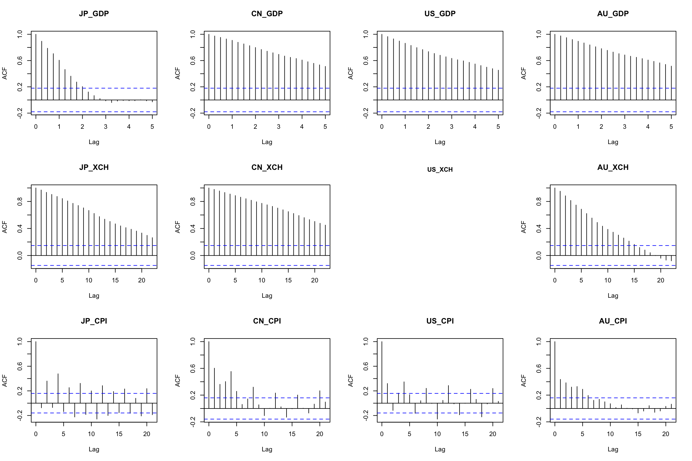

library(IMFData)
library(patchwork)
library(zoo)
library(ggplot2)
library(tidyr)
library(dplyr)
library(tseries)
library(knitr)
library(MASS)
library(ggplot2)
library(reshape2)
library(progress)
library(psych)
library(truncnorm)
library(extraDistr)
library(forecast)
library(HDInterval)
library(purrr)
library(MCMCpack)
library(Rmpfr)
library(igraph)Global Echoes: Analyzing the Interplay of Economic Indicators Across Leading Economies
1. The Question Objective, and Motivation
Objective: Construct a Bayesian Vector Autoregression model to forecast major macroeconomic indicators for the United States, Australia, Japan, and China to facilitate an investigation into the prospective interdependencies between the economies of these nations.
Question: This research project will examine how trade relationships, investment flows, monetary policy environments, and economic performances within the United States, Australia, Japan and China mutually influence each other, and assess the implications of these interactions for predicting future values of these economic indicators.
Motivation: Since the onset of the COVID-19 pandemic, the global economic landscape has witnessed a series of unprecedented shifts in key macroeconomic indicators, spurred by governments’ adoption of varied expansionary monetary policies. Initially, to buffer their economies, many nations implemented expansive monetary strategies, later swiftly transitioning to interest rate hikes in a bid to manage surging inflation rates—a scenario not seen in decades. The pandemic’s disruption to trade further exacerbated inflationary pressures for some economies, highlighting the intricate interdependencies among major economies with significant trade and financial ties. This period recorded stark contrast in inflation levels, with unprecedented highs in the US and Australia and notably low inflation in China and Japan. Amidst this turmoil, a divergence in economic paths also became apparent, thei9 United States and Australia have witness robust economic rebounds, whereas China and Japan saw more tepid recoveries. This research aims to dissect the nuanced web of economic interdependencies between the United States, Australia, Japan, and China, analyzing how their trade relationships, investment flows, and monetary policy environments have mutually influenced their economic performances. Additionally, it seeks to understand the ramifications of these dynamics for the predictive accuracy of future economic indicators, offering insights into the evolving global economic order.
2. Data and their properties
Proposed Dataset: This study is uses data from the International Monetary Fund’s (IMF) database. The IMF data offers a comprehensive collection of global economic information; including several key databases such as the World Economic Outlook Databases, International Financial Statistics (IFS), Government Finance Statistics. This analysis will predominantly focus on the IFS database, which is composed of a sizeable collection of financial and economic data from across the global, featuring 1,681 distinct indicators such as consumer price index, interest rates, exchange rates, national accounts, government finance statistics. The data is available in various frequencies – annual, semi-annual, quarterly, monthly, daily, and weekly. As this research is primarily focused on analyzing macroeconomic data that are published on a monthly or quarterly basis, quarterly data from Q1 1994 to Q3 2023 will be used. The analysis will examine key macroeconomic variables including consumer price indexes, foreign direct investments, exchange rates, balance of payments, interest rates and the national gross domestic product of the United States, Australia, Japan, and China. sf Variables and Motivation:
| Variables | Original Unit | Final Unit | Mnemonic | Code |
|---|---|---|---|---|
| Prices, Consumer Price Index, All items, Previous period | % Change | % Change | % Change | CPI |
| Exchange Rates, Domestic Currency per U.S. Dollar, Period Average | per US dollar | per US dollar | XCH | ENDA_XDC_USD_R |
| Gross Domestic Product, Nominal, Seasonally Adjusted | Domestic Currency (millions) | log(US dollar) | GDP | NGDP_NSA_XDC |
The variables included in this study were chosen with the objective to include key economic indicators that are susceptible to changes in other nations while also ensuring relatively consistent measures exist for all four nations. These variables were chosen not only for their ability to provide insights into the trade relations, investment dynamics and monetary policy frameworks, but also for their roles as barometers of overall economic health and performance. Exchange rates directly impact trade balances and investment flows, influencing economic performances. By examining the volatility and trends in exchange rates, insights can be gleaned into how monetary policies and economic conditions in one country can affect its trade partners. GDP is the ultimate measure of economic performance, encapsulating the outcome of various economic activities and policies. Analyzing GDP allows for assessing economic momentum and comparing growth rates across countries and over time, offering a clear picture of economic health and trends. CPI was included because it is a crucial indicator of inflation, reflecting changes in the cost of living and purchasing power, and thus, is helpful in quantifying economic stability and monetary policy effectiveness in each nation. The presence of cyclical trends in the variables, alongside the observed impact of lagged values on future outcomes, highlights the suitability of the Bayesian Vector Autoregression model for our analysis. This model can well capture the temporal dynamics and interdependencies inherent in these economic indicators, offering a robust framework for understanding the nuanced interactions and feedback loops that characterize their behavior over time.
#################################################################################
#################################################################################
#Download Data
#################################################################################
#################################################################################
#devtools::install_github('mingjerli/IMFData')
# https://github.com/mingjerli/IMFData
#find out available dataset in IMF data
availableDB <- DataflowMethod()
#availableDB$DatabaseID
#Findout how many dimensions are available in a given dataset.
# Available dimension code
IFS.available.codes <- DataStructureMethod("IFS")
#names(IFS.available.codes)
# Possible code in the first dimension
#IFS.available.codes[[1]]
IFS.data.category <- IFS.available.codes[[3]]
#Search possible code to use in each dimension.
#Here, we want to search code related to GDP in CL_INDICATOR_IFS dimension
#CodeSearch(IFS.available.codes, "CL_INDICATOR_IFS", "CPI")
#Make API call to get data
databaseID <- "IFS"
startdate = "1950-01-01"
enddate = "2024-05-01"
checkquery = FALSE
##################################################################
##################################################################
#Interest rate data
##################################################################
##################################################################
#China
##################################################################
# queryfilter <- list(CL_FREA = "Q", CL_AREA_IFS = "CN", CL_INDICATOR_IFS = 'FIDR_PA') #Financial, Interest Rates, Deposit, Percent per annum
# CN.IR.query <- CompactDataMethod(databaseID, queryfilter, startdate, enddate,
# checkquery)
##################################################################
#US
##################################################################
#queryfilter <- list(CL_FREA = "Q", CL_AREA_IFS = "US", CL_INDICATOR_IFS = 'FICPR_PA') #
#queryfilter <- list(CL_FREA = "Q", CL_AREA_IFS = "US", CL_INDICATOR_IFS = 'FID_PA') #
#queryfilter <- list(CL_FREA = "Q", CL_AREA_IFS = "US", CL_INDICATOR_IFS = 'FIGBY_SM_PA') #
#queryfilter <- list(CL_FREA = "Q", CL_AREA_IFS = "US", CL_INDICATOR_IFS = 'FIGB_PA') #
#queryfilter <- list(CL_FREA = "Q", CL_AREA_IFS = "US", CL_INDICATOR_IFS = 'FITB_3M_PA') #
#queryfilter <- list(CL_FREA = "Q", CL_AREA_IFS = "US", CL_INDICATOR_IFS = 'FITB_PA')
#queryfilter <- list(CL_FREA = "Q", CL_AREA_IFS = "US", CL_INDICATOR_IFS = 'FIH_HH_L_CC_1Y_PA')
#queryfilter <- list(CL_FREA = "Q", CL_AREA_IFS = "US", CL_INDICATOR_IFS = 'FILR_PA')
# Sys.sleep(0.5)
# queryfilter <- list(CL_FREA = "Q", CL_AREA_IFS = "US", CL_INDICATOR_IFS = 'FPOLM_PA') #Financial, Interest Rates, Monetary Policy-Related Interest Rate, Percent per annum
# US.IR.query <- CompactDataMethod(databaseID, queryfilter, startdate, enddate,
# checkquery)
##################################################################
#AU
##################################################################
# Sys.sleep(0.5)
# queryfilter <- list(CL_FREA = "Q", CL_AREA_IFS = "AU", CL_INDICATOR_IFS = 'FPOLM_PA') #Financial, Interest Rates, Monetary Policy-Related Interest Rate, Percent per annum
# AU.IR.query <- CompactDataMethod(databaseID, queryfilter, startdate, enddate,
# checkquery)
##################################################################
#J{} #starts 2006 Q2
##################################################################
# Sys.sleep(0.5)
# queryfilter <- list(CL_FREA = "Q", CL_AREA_IFS = "JP", CL_INDICATOR_IFS = 'FPOLM_PA') #Financial, Interest Rates, Monetary Policy-Related Interest Rate, Percent per annum
# JP.IR.query <- CompactDataMethod(databaseID, queryfilter, startdate, enddate,
# checkquery)
#International Investment Positions Data
#China
Sys.sleep(0.5)
queryfilter <- list(CL_FREA = "Q", CL_AREA_IFS = "CN", CL_INDICATOR_IFS = 'IAD_BP6_USD')
CN.FDI.query <- CompactDataMethod(databaseID, queryfilter, startdate, enddate,
checkquery)
#CN.FDI.query$Obs[[1]]
#Japan
Sys.sleep(0.5)
queryfilter <- list(CL_FREA = "Q", CL_AREA_IFS = "JP", CL_INDICATOR_IFS = 'IAD_BP6_USD')
JP.FDI.query <- CompactDataMethod(databaseID, queryfilter, startdate, enddate,
checkquery)
#JP.FDI.query$Obs[[1]]
#United States
Sys.sleep(0.5)
queryfilter <- list(CL_FREA = "Q", CL_AREA_IFS = "US", CL_INDICATOR_IFS = 'IAD_BP6_USD')
US.FDI.query <- CompactDataMethod(databaseID, queryfilter, startdate, enddate,
checkquery)
#US.FDI.query$Obs[[1]]
#Australia
Sys.sleep(0.5)
queryfilter <- list(CL_FREA = "Q", CL_AREA_IFS = "AU", CL_INDICATOR_IFS = 'IAD_BP6_USD')
AU.FDI.query <- CompactDataMethod(databaseID, queryfilter, startdate, enddate,
checkquery)
#Exchange Rate
#China
Sys.sleep(0.5)
queryfilter <- list(CL_FREA = "Q", CL_AREA_IFS = "CN", CL_INDICATOR_IFS = 'ENDA_XDC_USD_RATE')
CN.XCH.query <- CompactDataMethod(databaseID, queryfilter, startdate, enddate,
checkquery)
#CN.XCH.query$Obs[[1]]
#Japan
Sys.sleep(0.5)
queryfilter <- list(CL_FREA = "Q", CL_AREA_IFS = "JP", CL_INDICATOR_IFS = 'ENDA_XDC_USD_RATE')
JP.XCH.query <- CompactDataMethod(databaseID, queryfilter, startdate, enddate,
checkquery)
#JP.XCH.query$Obs[[1]]
#United States
Sys.sleep(0.5)
queryfilter <- list(CL_FREA = "Q", CL_AREA_IFS = "US", CL_INDICATOR_IFS = 'ENDA_XDC_USD_RATE')
US.XCH.query <- CompactDataMethod(databaseID, queryfilter, startdate, enddate,
checkquery)
#Australia
Sys.sleep(0.5)
queryfilter <- list(CL_FREA = "Q", CL_AREA_IFS = "AU", CL_INDICATOR_IFS = 'ENDA_XDC_USD_RATE')
AU.XCH.query <- CompactDataMethod(databaseID, queryfilter, startdate, enddate,
checkquery)
########################################################################
#Pause for 5 seconds before continue execution
########################################################################
#Balance of Payments
#China
Sys.sleep(0.5)
queryfilter <- list(CL_FREA = "Q", CL_AREA_IFS = "CN", CL_INDICATOR_IFS = 'BGS_BP6_USD')
CN.BOP.query <- CompactDataMethod(databaseID, queryfilter, startdate, enddate,
checkquery)
#CN.BOP.query$Obs[[1]]
#Japan
Sys.sleep(0.5)
queryfilter <- list(CL_FREA = "Q", CL_AREA_IFS = "JP", CL_INDICATOR_IFS = 'BGS_BP6_USD')
JP.BOP.query <- CompactDataMethod(databaseID, queryfilter, startdate, enddate,
checkquery)
#JP.BOP.query$Obs[[1]]
#United States
Sys.sleep(0.5)
queryfilter <- list(CL_FREA = "Q", CL_AREA_IFS = "US", CL_INDICATOR_IFS = 'BGS_BP6_USD')
US.BOP.query <- CompactDataMethod(databaseID, queryfilter, startdate, enddate,
checkquery)
#US.BOP.query$Obs[[1]]
#Australia
Sys.sleep(0.5)
queryfilter <- list(CL_FREA = "Q", CL_AREA_IFS = "AU", CL_INDICATOR_IFS = 'BGS_BP6_USD')
AU.BOP.query <- CompactDataMethod(databaseID, queryfilter, startdate, enddate,
checkquery)
#AU.BOP.query$Obs[[1]]
#Bond Yield
#China
# queryfilter <- list(CL_FREA = "Q", CL_AREA_IFS = "CN", CL_INDICATOR_IFS = 'FITBBE_PA')
# CN.IR.query <- CompactDataMethod(databaseID, queryfilter, startdate, enddate,
# checkquery)
#CN.IR.query$Obs[[1]]
#Japan
########################################################################
#Pause for 5 seconds before continue execution
########################################################################
# Sys.sleep(5)
#
# queryfilter <- list(CL_FREA = "Q", CL_AREA_IFS = "JP", CL_INDICATOR_IFS = 'FIGB_PA')
# JP.IR.query <- CompactDataMethod(databaseID, queryfilter, startdate, enddate,
# checkquery)
#JP.IR.query$Obs[[1]]
#United States
# queryfilter <- list(CL_FREA = "Q", CL_AREA_IFS = "US", CL_INDICATOR_IFS = 'FIGB_PA')
# US.IR.query <- CompactDataMethod(databaseID, queryfilter, startdate, enddate,
# checkquery)
# #US.IR.query$Obs[[1]]
#Australia
# queryfilter <- list(CL_FREA = "Q", CL_AREA_IFS = "AU", CL_INDICATOR_IFS = 'FIGB_PA')
# AU.IR.query <- CompactDataMethod(databaseID, queryfilter, startdate, enddate,
# checkquery)
#AU.IR.query$Obs[[1]]
#GDP
#China
Sys.sleep(0.5)
queryfilter <- list(CL_FREA = "Q", CL_AREA_IFS = "CN", CL_INDICATOR_IFS = 'NGDP_NSA_XDC')
CN.GDP.query <- CompactDataMethod(databaseID, queryfilter, startdate, enddate,
checkquery)
CN.GDP.query$Obs[[1]]
#Japan
Sys.sleep(0.5)
queryfilter <- list(CL_FREA = "Q", CL_AREA_IFS = "JP", CL_INDICATOR_IFS = 'NGDP_NSA_XDC')
JP.GDP.query <- CompactDataMethod(databaseID, queryfilter, startdate, enddate,
checkquery)
#JP.GDP.query$Obs[[1]]
########################################################################
#Pause for five seconds before continue execution
########################################################################
Sys.sleep(0.5)
#United States
queryfilter <- list(CL_FREA = "Q", CL_AREA_IFS = "US", CL_INDICATOR_IFS = 'NGDP_NSA_XDC')
US.GDP.query <- CompactDataMethod(databaseID, queryfilter, startdate, enddate,
checkquery)
#US.GDP.query$Obs[[1]]
#Australia
Sys.sleep(0.5)
queryfilter <- list(CL_FREA = "Q", CL_AREA_IFS = "AU", CL_INDICATOR_IFS = 'NGDP_NSA_XDC')
AU.GDP.query <- CompactDataMethod(databaseID, queryfilter, startdate, enddate,
checkquery)
#AU.GDP.query$Obs[[1]]
#CPI
#China
Sys.sleep(0.5)
queryfilter <- list(CL_FREA = "Q", CL_AREA_IFS = "CN", CL_INDICATOR_IFS = 'PCPI_PC_PP_PT')
CN.CPI.query <- CompactDataMethod(databaseID, queryfilter, startdate, enddate,
checkquery)
#CN.CPI.query$Obs[[1]]
#Japan
Sys.sleep(0.5)
queryfilter <- list(CL_FREA = "Q", CL_AREA_IFS = "JP", CL_INDICATOR_IFS = 'PCPI_PC_PP_PT')
JP.CPI.query <- CompactDataMethod(databaseID, queryfilter, startdate, enddate,
checkquery)
#JP.CPI.query$Obs[[1]]
#United States
Sys.sleep(0.5)
queryfilter <- list(CL_FREA = "Q", CL_AREA_IFS = "US", CL_INDICATOR_IFS = 'PCPI_PC_PP_PT')
US.CPI.query <- CompactDataMethod(databaseID, queryfilter, startdate, enddate,
checkquery)
#US.CPI.query$Obs[[1]]
#Australia
Sys.sleep(0.5)
queryfilter <- list(CL_FREA = "Q", CL_AREA_IFS = "AU", CL_INDICATOR_IFS = 'PCPI_PC_PP_PT')
AU.CPI.query <- CompactDataMethod(databaseID, queryfilter, startdate, enddate,
checkquery)
#AU.CPI.query$Obs[[1]]
# #Unemployment Rate
# #China
# queryfilter <- list(CL_FREA = "Q", CL_AREA_IFS = "CN", CL_INDICATOR_IFS = 'LUR_PT')
# CN.UMR.query <- CompactDataMethod(databaseID, queryfilter, startdate, enddate,
# checkquery)
# #CN.UMR.query$Obs[[1]]
# #Japan
# queryfilter <- list(CL_FREA = "Q", CL_AREA_IFS = "JP", CL_INDICATOR_IFS = 'LUR_PT')
# JP.UMR.query <- CompactDataMethod(databaseID, queryfilter, startdate, enddate,
# checkquery)
# #JP.UMR.query$Obs[[1]]
# #United States
# queryfilter <- list(CL_FREA = "Q", CL_AREA_IFS = "US", CL_INDICATOR_IFS = 'LUR_PT')
# US.UMR.query <- CompactDataMethod(databaseID, queryfilter, startdate, enddate,
# checkquery)
# #US.UMR.query$Obs[[1]]
#
# #Australia
# queryfilter <- list(CL_FREA = "Q", CL_AREA_IFS = "AU", CL_INDICATOR_IFS = 'LUR_PT')
# AU.UMR.query <- CompactDataMethod(databaseID, queryfilter, startdate, enddate,
# checkquery)
# #AU.UMR.query$Obs[[1]]#################################################################################
#################################################################################
#Plot Data
#################################################################################
#################################################################################
# print('earliest available interest rate data fo China: ')
# print(min(CN.IR.query$Obs[[1]]$`@TIME_PERIOD`))
# print('earliest available interest rate data fo Australia: ')
# print(min(AU.IR.query$Obs[[1]]$`@TIME_PERIOD`))
# print('earliest available interest rate data fo Japan: ')
# print(min(JP.IR.query$Obs[[1]]$`@TIME_PERIOD`))
# print('earliest available interest rate data fo US: ')
# print(min(US.IR.query$Obs[[1]]$`@TIME_PERIOD`))
#
# print('newest available interest rate data fo China: ')
# print(max(CN.IR.query$Obs[[1]]$`@TIME_PERIOD`))
# print('newest available interest rate data fo Australia: ')
# print(max(AU.IR.query$Obs[[1]]$`@TIME_PERIOD`))
# print('newest available interest rate data fo Japan: ')
# print(max(JP.IR.query$Obs[[1]]$`@TIME_PERIOD`))
# print('newest available interest rate data fo US: ')
# print(max(US.IR.query$Obs[[1]]$`@TIME_PERIOD`))
# years <- 2006:2023
# quarters <- paste(rep(years, each = 4), rep(c("-Q1", "-Q2", "-Q3", "-Q4"), times = length(years)), sep = "")
# all_quarters <- data.frame(Time = quarters[quarters >= "2006-Q2" & quarters <= "2023-Q4"])
#
# IR_data = data.frame(JP.IR.query$Obs[[1]])
# IR_data = IR_data[,1:2]
# colnames(IR_data) = c('Time', 'JP_IR')
# #IR_data$Time <- as.character(as.yearqtr(IR_data$Time))
# IR_data = left_join(all_quarters, IR_data, by = "Time")
# IR_data <- IR_data %>%
# fill(JP_IR, .direction = "down")
#
# tmp = data.frame(CN.IR.query$Obs[[1]])
# tmp = tmp[,1:2]
# colnames(tmp) = c('Time', 'CN_IR')
# IR_data = left_join(IR_data, tmp, by = "Time")
# tmp = data.frame(US.IR.query$Obs[[1]])
# tmp = tmp[,1:2]
# colnames(tmp) = c('Time', 'US_IR')
# IR_data = left_join(IR_data, tmp, by = "Time")
#
# tmp = data.frame(AU.IR.query$Obs[[1]])
# tmp = tmp[,1:2]
# colnames(tmp) = c('Time', 'AU_IR')
# IR_data = left_join(IR_data, tmp, by = "Time")
#
# IR_data$Time = as.yearqtr(IR_data$Time, format = "%Y-Q%q")
#
# IR_data <- IR_data %>%
# mutate(
# JP_IR = as.numeric(JP_IR),
# CN_IR = as.numeric(CN_IR),
# US_IR = as.numeric(US_IR),
# AU_IR = as.numeric(AU_IR)
# )
# IR_data_long <- pivot_longer(IR_data,
# cols = colnames(IR_data)[2:5],
# names_to = "Country",
# values_to = "IR")
# IR_plot <- ggplot(data = IR_data_long, aes(x = Time, y = IR, color = Country)) +
# geom_line() +
# scale_color_manual(values = c(
# "CN_IR" = "#3498db", # Blue
# "JP_IR" = "#e74c3c", # Red
# "US_IR" = "#2ecc71", # Green
# "AU_IR" = "#f39c12" # Orange
# )) +
# theme_minimal() +
# labs(x = "Time", y = "IR (%)", title = "IR Trends", color = "Country") +
# theme(
# legend.title = element_blank(), # Removes the legend title for a cleaner look
# legend.position = "bottom" # Moves the legend to the bottom
# )
#################################################################################
###################################CPI##########################################
#################################################################################
# print('earliest available consumer price index data fo China: ')
# print(min(CN.CPI.query$Obs[[1]]$`@TIME_PERIOD`))
# print('earliest available consumer price index data fo Australia: ')
# print(min(AU.CPI.query$Obs[[1]]$`@TIME_PERIOD`))
# print('earliest available consumer price index data fo Japan: ')
# print(min(JP.CPI.query$Obs[[1]]$`@TIME_PERIOD`))
# print('earliest available consumer price index data fo US: ')
# print(min(US.CPI.query$Obs[[1]]$`@TIME_PERIOD`))
print('newest available consumer price index data fo China: ')
print(max(CN.CPI.query$Obs[[1]]$`@TIME_PERIOD`))
print('newest available consumer price index data fo Australia: ')
print(max(AU.CPI.query$Obs[[1]]$`@TIME_PERIOD`))
print('newest available consumer price index data fo Japan: ')
print(max(JP.CPI.query$Obs[[1]]$`@TIME_PERIOD`))
print('newest available consumer price index data fo US: ')
print(max(US.CPI.query$Obs[[1]]$`@TIME_PERIOD`))
years <- 1986:2024
quarters <- paste(rep(years, each = 4), rep(c("-Q1", "-Q2", "-Q3", "-Q4"), times = length(years)), sep = "")
all_quarters <- data.frame(Time = quarters[quarters >= "1986-Q2" & quarters <= "2024-Q1"])
CPI_data = data.frame(JP.CPI.query$Obs[[1]])
CPI_data = CPI_data[,1:2]
colnames(CPI_data) = c('Time', 'JP_CPI')
#CPI_data$Time <- as.character(as.yearqtr(CPI_data$Time))
CPI_data = left_join(all_quarters, CPI_data, by = "Time")
tmp = data.frame(CN.CPI.query$Obs[[1]])
tmp = tmp[,1:2]
colnames(tmp) = c('Time', 'CN_CPI')
CPI_data = left_join(CPI_data, tmp, by = "Time")
tmp = data.frame(US.CPI.query$Obs[[1]])
tmp = tmp[,1:2]
colnames(tmp) = c('Time', 'US_CPI')
CPI_data = left_join(CPI_data, tmp, by = "Time")
tmp = data.frame(AU.CPI.query$Obs[[1]])
tmp = tmp[,1:2]
colnames(tmp) = c('Time', 'AU_CPI')
CPI_data = left_join(CPI_data, tmp, by = "Time")
CPI_data$Time = as.yearqtr(CPI_data$Time, format = "%Y-Q%q")
CPI_data <- CPI_data %>%
mutate(
JP_CPI = as.numeric(JP_CPI),
CN_CPI = as.numeric(CN_CPI),
US_CPI = as.numeric(US_CPI),
AU_CPI = as.numeric(AU_CPI)
)
CPI_data_long <- pivot_longer(CPI_data,
cols = colnames(CPI_data)[2:5],
names_to = "Country",
values_to = "CPI")
CPI_plot <- ggplot(data = CPI_data_long, aes(x = Time, y = CPI, color = Country)) +
geom_line() +
scale_color_manual(values = c(
"CN_CPI" = "#3498db", # Blue
"JP_CPI" = "#e74c3c", # Red
"US_CPI" = "#2ecc71", # Green
"AU_CPI" = "#f39c12" # Orange
)) +
theme_minimal() +
labs(x = "Time", y = "CPI (%)", title = "CPI Trends", color = "Country") +
theme(
legend.title = element_blank(), # Removes the legend title for a cleaner look
legend.position = "bottom" # Moves the legend to the bottom
)
#################################################################################
###############################################FDI###############################
#################################################################################
# print('earliest available foreign direct investment data fo China: ')
# print(min(CN.FDI.query$Obs[[1]]$`@TIME_PERIOD`))
# print('earliest available foreign direct investment data fo Australia: ')
# print(min(AU.FDI.query$Obs[[1]]$`@TIME_PERIOD`))
# print('earliest available foreign direct investment data fo Japan: ')
# print(min(JP.FDI.query$Obs[[1]]$`@TIME_PERIOD`))
# print('earliest available foreign direct investment data fo US: ')
# print(min(US.FDI.query$Obs[[1]]$`@TIME_PERIOD`))
#
# print('newest available foreign direct investment data fo China: ')
# print(max(CN.FDI.query$Obs[[1]]$`@TIME_PERIOD`))
# print('newest available foreign direct investment data fo Australia: ')
# print(max(AU.FDI.query$Obs[[1]]$`@TIME_PERIOD`))
# print('newest available foreign direct investment data fo Japan: ')
# print(max(JP.FDI.query$Obs[[1]]$`@TIME_PERIOD`))
# print('newest available foreign direct investment data fo US: ')
# print(max(US.FDI.query$Obs[[1]]$`@TIME_PERIOD`))
# years <- 2010:2023
# quarters <- paste(rep(years, each = 4), rep(c("-Q1", "-Q2", "-Q3", "-Q4"), times = length(years)), sep = "")
# all_quarters <- data.frame(Time = quarters[quarters >= "2010-Q4" & quarters <= "2023-Q3"])
#
# FDI_data = data.frame(JP.FDI.query$Obs[[1]])
# FDI_data = FDI_data[,1:2]
# colnames(FDI_data) = c('Time', 'JP_FDI')
# #FDI_data$Time <- as.character(as.yearqtr(FDI_data$Time))
# FDI_data = left_join(all_quarters, FDI_data, by = "Time")
#
# tmp = data.frame(CN.FDI.query$Obs[[1]])
# tmp = tmp[,1:2]
# colnames(tmp) = c('Time', 'CN_FDI')
# FDI_data = left_join(FDI_data, tmp, by = "Time")
#
# tmp = data.frame(US.FDI.query$Obs[[1]])
# tmp = tmp[,c(1, 3)]
# colnames(tmp) = c('Time', 'US_FDI')
# FDI_data = left_join(FDI_data, tmp, by = "Time")
#
# tmp = data.frame(AU.FDI.query$Obs[[1]])
# tmp = tmp[,1:2]
# colnames(tmp) = c('Time', 'AU_FDI')
# FDI_data = left_join(FDI_data, tmp, by = "Time")
#
# FDI_data$Time = as.yearqtr(FDI_data$Time, format = "%Y-Q%q")
#
# FDI_data <- FDI_data %>%
# mutate(
# JP_FDI = as.numeric(JP_FDI),
# CN_FDI = as.numeric(CN_FDI),
# US_FDI = as.numeric(US_FDI),
# AU_FDI = as.numeric(AU_FDI)
# )
# FDI_data_long <- pivot_longer(FDI_data,
# cols = colnames(FDI_data)[2:5],
# names_to = "Country",
# values_to = "FDI")
#
# FDI_plot <- ggplot(data = FDI_data_long, aes(x = Time, y = FDI, color = Country)) +
# geom_line() +
# scale_color_manual(values = c(
# "CN_FDI" = "#3498db", # Blue
# "JP_FDI" = "#e74c3c", # Red
# "US_FDI" = "#2ecc71", # Green
# "AU_FDI" = "#f39c12" # Orange
# )) +
# theme_minimal() +
# labs(x = "Time", y = "FDI (%)", title = "FDI Trends", color = "Country") +
# theme(
# legend.title = element_blank(), # Removes the legend title for a cleaner look
# legend.position = "bottom" # Moves the legend to the bottom
# )
#################################################################################
###########################################XCH###################################
#################################################################################
# print('earliest available exchange rate data fo China: ')
# print(min(CN.XCH.query$Obs[[1]]$`@TIME_PERIOD`))
# print('earliest available exchange rate data fo Australia: ')
# print(min(AU.XCH.query$Obs[[1]]$`@TIME_PERIOD`))
# print('earliest available exchange rate data fo Japan: ')
# print(min(JP.XCH.query$Obs[[1]]$`@TIME_PERIOD`))
# print('earliest available exchange rate data fo US: ')
# print(min(US.XCH.query$Obs[[1]]$`@TIME_PERIOD`))
#
# print('newest available exchange rate data fo China: ')
# print(max(CN.XCH.query$Obs[[1]]$`@TIME_PERIOD`))
# print('newest available exchange rate data fo Australia: ')
# print(max(AU.XCH.query$Obs[[1]]$`@TIME_PERIOD`))
# print('newest available exchange rate data fo Japan: ')
# print(max(JP.XCH.query$Obs[[1]]$`@TIME_PERIOD`))
# print('newest available exchange rate data fo US: ')
# print(max(US.XCH.query$Obs[[1]]$`@TIME_PERIOD`))
years <- 1980:2024
quarters <- paste(rep(years, each = 4), rep(c("-Q1", "-Q2", "-Q3", "-Q4"), times = length(years)), sep = "")
all_quarters <- data.frame(Time = quarters[quarters >= "1980-Q1" & quarters <= "2024-Q1"])
XCH_data = data.frame(JP.XCH.query$Obs[[1]])
XCH_data = XCH_data[,1:2]
colnames(XCH_data) = c('Time', 'JP_XCH')
#XCH_data$Time <- as.character(as.yearqtr(XCH_data$Time))
XCH_data = left_join(all_quarters, XCH_data, by = "Time")
tmp = data.frame(CN.XCH.query$Obs[[1]])
tmp = tmp[,1:2]
colnames(tmp) = c('Time', 'CN_XCH')
XCH_data = left_join(XCH_data, tmp, by = "Time")
tmp = data.frame(US.XCH.query$Obs[[1]])
tmp = tmp[,1:2]
colnames(tmp) = c('Time', 'US_XCH')
XCH_data = left_join(XCH_data, tmp, by = "Time")
tmp = data.frame(AU.XCH.query$Obs[[1]])
tmp = tmp[,1:2]
colnames(tmp) = c('Time', 'AU_XCH')
XCH_data = left_join(XCH_data, tmp, by = "Time")
XCH_data$Time = as.yearqtr(XCH_data$Time, format = "%Y-Q%q")
XCH_data <- XCH_data %>%
mutate(
JP_XCH = as.numeric(JP_XCH),
CN_XCH = as.numeric(CN_XCH),
US_XCH = as.numeric(US_XCH),
AU_XCH = as.numeric(AU_XCH)
)
XCH_data_percent <- XCH_data %>%
mutate(across(c(JP_XCH, CN_XCH, AU_XCH),
~ (./lag(.) - 1) * 100,
.names = "{.col}"))
XCH_data_long <- pivot_longer(XCH_data,
cols = colnames(XCH_data)[2:5],
names_to = "Country",
values_to = "XCH")
XCH_data_percent_long <- pivot_longer(XCH_data_percent,
cols = colnames(XCH_data)[2:5],
names_to = "Country",
values_to = "XCH")
XCH_data_long <- XCH_data_long %>%
filter(Country != "US_XCH")
XCH_data_long <- XCH_data_long %>%
mutate(JP_Scaled_XCH = ifelse(Country == "JP_XCH", XCH * 0.1, XCH))
# XCH_data_percent_long <- XCH_data_percent_long %>%
# filter(Country != "US_XCH")
XCH_plot <- ggplot(data = XCH_data_long, aes(x = Time, color = Country)) +
geom_line(aes(y = JP_Scaled_XCH))+ # Plot AU and CN on the primary axis Plot JP on the secondary axis
scale_y_continuous(
name = "Exchange rate against the dollar, AUD and CNY per dollar",
sec.axis = sec_axis(~ . * 10, name = "Exchange rate against the dollar, 10 JPY per dollar") # Adjust the transformation to match the scale factor used above
) +
scale_color_manual(values = c(
"CN_XCH" = "#3498db", # Blue
"JP_XCH" = "#e74c3c", # Red
"AU_XCH" = "#f39c12" # Orange
)) +
theme_minimal() +
labs(
x = "Time",
title = "Exchange Rate Against the Dollar",
color = "Country"
) +
theme(
legend.title = element_blank(),
legend.position = "bottom",
axis.title.y = element_text(size = 8),
axis.title.y.right = element_text(size = 8)
)
#################################################################################
###########################################BOP###################################
#################################################################################
# print('earliest available balance of payments data fo China: ')
# print(min(CN.BOP.query$Obs[[1]]$`@TIME_PERIOD`))
# print('earliest available balance of payments data fo Australia: ')
# print(min(AU.BOP.query$Obs[[1]]$`@TIME_PERIOD`))
# print('earliest available balance of payments data fo Japan: ')
# print(min(JP.BOP.query$Obs[[1]]$`@TIME_PERIOD`))
# print('earliest available balance of payments data fo US: ')
# print(min(US.BOP.query$Obs[[1]]$`@TIME_PERIOD`))
#
# print('newest available balance of payments data fo China: ')
# print(max(CN.BOP.query$Obs[[1]]$`@TIME_PERIOD`))
# print('newest available balance of payments data fo Australia: ')
# print(max(AU.BOP.query$Obs[[1]]$`@TIME_PERIOD`))
# print('newest available balance of payments data fo Japan: ')
# print(max(JP.BOP.query$Obs[[1]]$`@TIME_PERIOD`))
# print('newest available balance of payments data fo US: ')
# print(max(US.BOP.query$Obs[[1]]$`@TIME_PERIOD`))
# years <- 2005:2024
# quarters <- paste(rep(years, each = 4), rep(c("-Q1", "-Q2", "-Q3", "-Q4"), times = length(years)), sep = "")
# all_quarters <- data.frame(Time = quarters[quarters >= "2005-Q1" & quarters <= "2023-Q4"])
#
# BOP_data = data.frame(JP.BOP.query$Obs[[1]])
# BOP_data = BOP_data[,1:2]
# colnames(BOP_data) = c('Time', 'JP_BOP')
#BOP_data$Time <- as.character(as.yearqtr(BOP_data$Time))
# BOP_data = left_join(all_quarters, BOP_data, by = "Time")
#
# tmp = data.frame(CN.BOP.query$Obs[[1]])
# tmp = tmp[,1:2]
# colnames(tmp) = c('Time', 'CN_BOP')
# BOP_data = left_join(BOP_data, tmp, by = "Time")
#
# tmp = data.frame(US.BOP.query$Obs[[1]])
# tmp = tmp[,1:2]
# colnames(tmp) = c('Time', 'US_BOP')
# BOP_data = left_join(BOP_data, tmp, by = "Time")
#
# tmp = data.frame(AU.BOP.query$Obs[[1]])
# tmp = tmp[,1:2]
# colnames(tmp) = c('Time', 'AU_BOP')
# BOP_data = left_join(BOP_data, tmp, by = "Time")
#
# BOP_data$Time = as.yearqtr(BOP_data$Time, format = "%Y-Q%q")
#
# BOP_data <- BOP_data %>%
# mutate(
# JP_BOP = as.numeric(JP_BOP),
# CN_BOP = as.numeric(CN_BOP),
# US_BOP = as.numeric(US_BOP),
# AU_BOP = as.numeric(AU_BOP)
# )
# BOP_data_long <- pivot_longer(BOP_data,
# cols = colnames(BOP_data)[2:5],
# names_to = "Country",
# values_to = "BOP")
# BOP_plot <- ggplot(data = BOP_data_long, aes(x = Time, y = BOP, color = Country)) +
# geom_line() +
# scale_color_manual(values = c(
# "CN_BOP" = "#3498db", # Blue
# "JP_BOP" = "#e74c3c", # Red
# "US_BOP" = "#2ecc71", # Green
# "AU_BOP" = "#f39c12" # Orange
# )) +
# theme_minimal() +
# labs(x = "Time", y = "BOP (%)", title = "BOP Trends", color = "Country") +
# theme(
# legend.title = element_blank(), # Removes the legend title for a cleaner look
# legend.position = "bottom" # Moves the legend to the bottom
# )
#################################################################################
###########################################GDP###################################
#################################################################################
# print('earliest available gross domestic product data fo China: ')
# print(min(CN.GDP.query$Obs[[1]]$`@TIME_PERIOD`))
# print('earliest available gross domestic product data fo Australia: ')
# print(min(AU.GDP.query$Obs[[1]]$`@TIME_PERIOD`))
# print('earliest available gross domestic product data fo Japan: ')
# print(min(JP.GDP.query$Obs[[1]]$`@TIME_PERIOD`))
# print('earliest available gross domestic product data fo US: ')
# print(min(US.GDP.query$Obs[[1]]$`@TIME_PERIOD`))
#
# print('newest available gross domestic product data fo China: ')
# print(max(CN.GDP.query$Obs[[1]]$`@TIME_PERIOD`))
# print('newest available gross domestic product data fo Australia: ')
# print(max(AU.GDP.query$Obs[[1]]$`@TIME_PERIOD`))
# print('newest available gross domestic product data fo Japan: ')
# print(max(JP.GDP.query$Obs[[1]]$`@TIME_PERIOD`))
# print('newest available gross domestic product data fo US: ')
# print(max(US.GDP.query$Obs[[1]]$`@TIME_PERIOD`))
years <- 1994:2024
quarters <- paste(rep(years, each = 4), rep(c("-Q1", "-Q2", "-Q3", "-Q4"), times = length(years)), sep = "")
all_quarters <- data.frame(Time = quarters[quarters >= "1994-Q1" & quarters <= "2023-Q3"])
GDP_data = data.frame(JP.GDP.query$Obs[[1]])
GDP_data = GDP_data[,1:2]
colnames(GDP_data) = c('Time', 'JP_GDP')
#GDP_data$Time <- as.character(as.yearqtr(GDP_data$Time))
GDP_data = left_join(all_quarters, GDP_data, by = "Time")
tmp = data.frame(CN.GDP.query$Obs[[1]])
tmp = tmp[,1:2]
colnames(tmp) = c('Time', 'CN_GDP')
GDP_data = left_join(GDP_data, tmp, by = "Time")
tmp = data.frame(US.GDP.query$Obs[[1]])
tmp = tmp[,1:2]
colnames(tmp) = c('Time', 'US_GDP')
GDP_data = left_join(GDP_data, tmp, by = "Time")
tmp = data.frame(AU.GDP.query$Obs[[1]])
tmp = tmp[,1:2]
colnames(tmp) = c('Time', 'AU_GDP')
GDP_data = left_join(GDP_data, tmp, by = "Time")
GDP_data$Time = as.yearqtr(GDP_data$Time, format = "%Y-Q%q")
GDP_data <- GDP_data %>%
mutate(
JP_GDP = as.numeric(JP_GDP),
CN_GDP = as.numeric(CN_GDP),
US_GDP = as.numeric(US_GDP),
AU_GDP = as.numeric(AU_GDP)
)
tmp = left_join(GDP_data, XCH_data, by = 'Time')
tmp$JP_GDP = tmp$JP_GDP/tmp$JP_XCH
tmp$CN_GDP = tmp$CN_GDP/tmp$CN_XCH
tmp$AU_GDP = tmp$AU_GDP/tmp$AU_XCH
tmp$US_GDP = tmp$US_GDP/tmp$US_XCH
GDP_data = tmp[colnames(GDP_data)[2:5]]
JP_GDP_ts <- ts(GDP_data$JP_GDP, start=c(1994, 1), frequency=4)
CN_GDP_ts <- ts(GDP_data$CN_GDP, start=c(1994, 1), frequency=4)
US_GDP_ts <- ts(GDP_data$US_GDP, start=c(1994, 1), frequency=4)
AU_GDP_ts <- ts(GDP_data$AU_GDP, start=c(1994, 1), frequency=4)
adjust_series <- function(series) {
decomposed <- stl(series, s.window="periodic")
seasadj(decomposed) # Return the seasonally adjusted series
}
JP_GDP_adj <- adjust_series(JP_GDP_ts)
CN_GDP_adj <- adjust_series(CN_GDP_ts)
US_GDP_adj <- adjust_series(US_GDP_ts)
AU_GDP_adj <- adjust_series(AU_GDP_ts)
adjusted_GDP_data <- data.frame(
Time = as.Date(time(JP_GDP_adj), origin = "1970-01-01"),
JP_GDP = JP_GDP_adj,
CN_GDP = CN_GDP_adj,
US_GDP = US_GDP_adj,
AU_GDP = AU_GDP_adj
)
adjusted_GDP_data$Time = as.yearqtr(adjusted_GDP_data$Time, format = "%Y-Q%q")
adjusted_GDP_data_long <- pivot_longer(adjusted_GDP_data,
cols = colnames(adjusted_GDP_data)[2:5],
names_to = "Country",
values_to = "GDP")
GDP_plot <- ggplot(data = adjusted_GDP_data_long, aes(x = Time, y = GDP, color = Country)) +
geom_line() +
scale_color_manual(values = c(
"CN_GDP" = "#3498db", # Blue
"JP_GDP" = "#e74c3c", # Red
"US_GDP" = "#2ecc71", # Green
"AU_GDP" = "#f39c12" # Orange
)) +
theme_minimal() +
labs(x = "Time", y = "GDP", title = "Seasonally Adjustd GDP Trends", color = "Country") +
theme(
legend.title = element_blank(), # Removes the legend title for a cleaner look
legend.position = "bottom" # Moves the legend to the bottom
)final_df = inner_join(CPI_data, adjusted_GDP_data, by = 'Time')
final_df = inner_join(final_df, XCH_data, by = 'Time')
final_df = final_df %>% dplyr::select(-c('US_XCH'))
final_df[c('JP_GDP', 'CN_GDP', 'US_GDP', 'AU_GDP')] = log(final_df[c('JP_GDP', 'CN_GDP', 'US_GDP', 'AU_GDP')])
#final_df[,2:ncol(final_df)] = scale(final_df[,2:ncol(final_df)])
##############################################scaling data###############################
print('Start time of analysis: ')
print(min(final_df$Time))
print('End time of analysis: ')
print(max(final_df$Time))Data Plots
layout <- (XCH_plot) / (GDP_plot)/ ( CPI_plot)
#layout <- (BOP_plot | XCH_plot) / (GDP_plot | FDI_plot) / (CPI_plot)
#FDI_original_plot | BOP_original_plot) / (XCH_original_plot | GDP_original_plot)
layout
Stationarity Check
Stationary Tests
This section employs the Augmented Dickey-Fuller test to examine the null hypothesis that a unit root is present in these time series. A lag order of 4 was chosen for the ADF test given our data’s quarterly frequency. The results indicate that most of the macroeconomic indicators possess a unit root and are not stationary, with a few exceptions. Specifically, we have enough evidence to reject the null hypothesis for the CPI series in China and the United States at a 5% significance level. Interestingly, Japan’s GDP series is found to be unit-root stationary at this significance level. This implies that Japan’s GDP exhibits a consistent mean and variance over time, contrasting with the general trend observed in other national GDP series. Japan’s GDP growth has been known to be stagnant for quite some years and it’s macroeconomic indicators may respond differently to economic shocks compared to its non-stationary counterparts
#install.packages("tseries")
perform_adf_test <- function(series) {
adf_test <- adf.test(series, alternative = "stationary", k = 4)
list(
statistic = adf_test$statistic,
lag.order = as.numeric(adf_test$parameter),
p.value = adf_test$p.value
)
}
results <- sapply(CPI_data[,2:5], perform_adf_test)
results_df <- as.data.frame(t(results), stringsAsFactors = FALSE)
names(results_df) <- c("Dickey-Fuller Statistic", "Lag Order", "P-value")
results_df$Country <- rownames(results_df)
rownames(results_df) <- NULL
kable(results_df, caption = "ADF Test Results for CPI Data by Country")| Dickey-Fuller Statistic | Lag Order | P-value | Country |
|---|---|---|---|
| -3.258408 | 4 | 0.08079872 | JP_CPI |
| -4.299916 | 4 | 0.01 | CN_CPI |
| -3.55799 | 4 | 0.0394958 | US_CPI |
| -3.333834 | 4 | 0.06822768 | AU_CPI |
results <- sapply(XCH_data[2:nrow(XCH_data),c(2,3,5)], perform_adf_test)
results_df <- as.data.frame(t(results), stringsAsFactors = FALSE)
names(results_df) <- c("Dickey-Fuller Statistic", "Lag Order", "P-value")
results_df$Country <- rownames(results_df)
rownames(results_df) <- NULL
kable(results_df, caption = "ADF Test Results for Exchange Rate (% change) Data by Country")| Dickey-Fuller Statistic | Lag Order | P-value | Country |
|---|---|---|---|
| -1.791111 | 4 | 0.6635047 | JP_XCH |
| -1.565957 | 4 | 0.7575635 | CN_XCH |
| -2.56175 | 4 | 0.3415666 | AU_XCH |
results <- sapply(adjusted_GDP_data[2:nrow(adjusted_GDP_data),2:5], perform_adf_test)
results_df <- as.data.frame(t(results), stringsAsFactors = FALSE)
names(results_df) <- c("Dickey-Fuller Statistic", "Lag Order", "P-value")
results_df$Country <- rownames(results_df)
rownames(results_df) <- NULL
kable(results_df, caption = "ADF Test Results for seasonally adjusted Data by Country")| Dickey-Fuller Statistic | Lag Order | P-value | Country |
|---|---|---|---|
| -3.499383 | 4 | 0.04535076 | JP_GDP |
| -2.472818 | 4 | 0.3802514 | CN_GDP |
| 0.7030938 | 4 | 0.99 | US_GDP |
| -2.030497 | 4 | 0.5639204 | AU_GDP |
The ACF plots of seasonally adjusted GDP data shows a strong autocorrelation at smaller lags and the autocorrelation decreases sharply as the lags increase. It is worth noting that the autocorrelations decreases much faster for Japan than for the other countries. Similar phenomenon is observed with exchange rates against the dollar for all three countries. It is worth noting that the autocorrelations for the Chinese series a more persistent than the others, possibly due to the fact that China has a managed floating exchange rate system, where the Chinese central banks sets a target exchange rate. The CPI data for all four countries shows generally low autocorrelation across lags, particularly beyond the first few periods. This suggests that CPI measurements are relatively independent from quarter to quarter. The alternating signs in the autocorrelation function (ACF) plot for Japan and US’s CPI data suggest possible seasonal effects, cyclical patterns or due to data collection methods.
par(mfrow = c(3, 4))
acf(adjusted_GDP_data[,2], main = colnames(adjusted_GDP_data)[2])
acf(adjusted_GDP_data[,3], main = colnames(adjusted_GDP_data)[3])
acf(adjusted_GDP_data[,4], main = colnames(adjusted_GDP_data)[4])
acf(adjusted_GDP_data[,5], main = colnames(adjusted_GDP_data)[5])
acf(XCH_data[,2], main = colnames(XCH_data)[2])
acf(XCH_data[,3], main = colnames(XCH_data)[3])
plot.new()
title(main = colnames(XCH_data)[4], cex.main = 1)
acf(XCH_data[,5], main = colnames(XCH_data)[5])
acf(CPI_data[,2], main = colnames(CPI_data)[2])
acf(CPI_data[,3], main = colnames(CPI_data)[3])
acf(CPI_data[,4], main = colnames(CPI_data)[4])
acf(CPI_data[,5], main = colnames(CPI_data)[5])
3. The Model and Hypothesis
We will employ four models to address our proposed problem. Firstly, we will use a standard Bayesian Vector Autoregressive (BVAR) model with independently and identically distributed innovations, as outlined in details in Woźniak (2022). Additionally, we will investigate a large BVAR model with flexible error covariance structures, following the methodology proposed by Chan (2015). Specifically, the second model will incorporate MA(1) Gaussian innovations to better account for potential model misspecifications such as omitted variable bias and to facilitate shrinkage in VAR coefficients. Our third model will be a BVAR incorporating common stochastic volatilities to allow for time varying distribution of volatility terms, which will be useful to handle the impact of specific events like the Covid-19 Global Pandemic. The final model will combine a common stochastic volatility frame work with MA(1) Gaussian innovations, offering a robust approach to volatility modelling.
3.1 Model 1: Standard BVAR(p) Model
3.1.1 Model Specification
\[ Y = XA+E\] \[E|X \sim \mathcal{MN}_{T \times N}(0_{T \times N},\Sigma_{N \times N}, I_T)\] \[ A = \begin{bmatrix} \mu_0^T \\ A_1^T \\ \vdots \\ A_p^T \end{bmatrix} , \quad Y = \begin{bmatrix} y_1^T \\ y_2^T \\ \vdots \\ y_T^T \end{bmatrix} , \quad x_t = \begin{bmatrix} 1 \\ y_{t-1}^T \\ \vdots \\ y_{t-p}^T \end{bmatrix} , \quad X = \begin{bmatrix} x_1^T \\ x_2^T \\ \vdots \\ x_T^T \end{bmatrix} , \quad E = \begin{bmatrix} e_1^T \\ e_2^T \\ \vdots \\ e_T^T \end{bmatrix} \]
where
- \(T\) is the number of time periods under consideration
- \(N\) is the number of variables, in our case, N = 20
- \(P\) is the number of lags
- \(Y\) is a \(T \times N\) matrix of variables of response variables we aim to model.
- \(A\) is a \(K \times N\) matrix of coefficients, \(K = (1+𝑝\times N)\).
- \(E\) is a \(T \times N\) matrix of the error terms
- \(X\) is a \(T \times (1+𝑝\times N)\) matrix of covariates
- \(\Sigma\) is a \(N \times N\) matrix representing the row-specific covariance matrix
- \(I_T\) is a \(T \times T\) identity matrix representing the column specific covariance matrix
- \(E|X\) follows a matrix-variate normal distribution with mean \(0_{T \times N}\), row specific covariance matrix \(\Sigma_{N \times N}\) and column specific covariance matrix \(I_T\)
- \(x_{t}^T = \left( \begin{array}{cccc}1 & y_{t-1} & y_{t-2} & \cdots & y_{t-p} \end{array} \right)\)
In our specific application, the Y matrix is formulated as follows:
\[ Y = \begin{pmatrix} \text{CPI}_{\text{CN}, p+1} & \text{XCH}_{\text{CN}, p+1} & \log(\text{GDP})_{\text{CN}, p+1} & \text{CPI}_{\text{US}, p+1} & \log(\text{GDP})_{\text{US}, p+1} & \text{CPI}_{\text{JP}, p+1} & \text{XCH}_{\text{JP}, p+1} & \log(\text{GDP})_{\text{JP}, p+1} & \text{CPI}_{\text{AU}, p+1} & \text{XCH}_{\text{AU}, p+1} & \log(\text{GDP})_{\text{AU}, p+1} \\ \text{CPI}_{\text{CN}, p+2} & \text{XCH}_{\text{CN}, p+2} & \log(\text{GDP})_{\text{CN}, p+2} & \text{CPI}_{\text{US}, p+2} & \log(\text{GDP})_{\text{US}, p+2} & \text{CPI}_{\text{JP}, p+2} & \text{XCH}_{\text{JP}, p+2} & \log(\text{GDP})_{\text{JP}, p+2} & \text{CPI}_{\text{AU}, p+2} & \text{XCH}_{\text{AU}, p+2} & \log(\text{GDP})_{\text{AU}, p+2} \\ \vdots & \vdots & \vdots & \vdots & \vdots & \vdots & \vdots & \vdots & \vdots & \vdots & \vdots \\ \text{CPI}_{\text{CN}, T} & \text{XCH}_{\text{CN}, T} & \log(\text{GDP})_{\text{CN}, T} & \text{CPI}_{\text{US}, T} & \log(\text{GDP})_{\text{US}, T} & \text{CPI}_{\text{JP}, T} & \text{XCH}_{\text{JP}, T} & \log(\text{GDP})_{\text{JP}, T} & \text{CPI}_{\text{AU}, T} & \text{XCH}_{\text{AU}, T} & \log(\text{GDP})_{\text{AU}, T} \end{pmatrix} \]
The Bayesian Vector Autoregression model as formulated above provides a robust framework for investigating the relationships among selected economic indicators across different nations. By employing this model, this research aims to quantitatively measure the influence of one country’s economic indicators on another, such as how lagged changes in China’s i consumer price index may influence the GDP growth rate of the United States and vice versa. The BVAR model, with its estimation of coefficients across various lags, offers a deep understanding of both immediate and more delayed economic interactions, which is crucial to analyzing the cyclical nature of trade relationships, investment flows, monetary policy environments, and economic performances and the transmission of these metrics across borders.
The strength of this BVAR model lies in its ability to incorporate prior economic knowledge and beliefs into the estimation process. By setting prior distributions for the matrix of coefficients A and the covariance matrix \(\Sigma\), the model can be tailors to reflect established economic theories regarding international economic linkages and the time it takes for policy changes in one country to affect another. By calibrating the prior variances, particularly for the autoregressive coefficients, we can integrate prior knowledge or hypotheses, such as the presence of unit roots or the diminishing influence of distant lags on current values, into the analysis. When interpreting the estimation output, attention will be given to the posterior means and variances of the coefficients, which represent the model’s “learnt” understanding of the underlying economic structure. The analysis will be supplemented by forecast error variance decompositions to better understand the proportion of the movements in economic indicators that can be accounted for by their own shocks versus shocks to other variables.
The economic context underscoring this analysis is the increased globalization over the past decade, marking an era where economies are more intertwined than ever through trade, capital flows, and policy decisions. This period has witnessed not only the strengthening of global economic ties but also recent calls from political leaders advocating for a reduction in globalization. These contrasting dynamics highlight the complexity of the current global economic landscape, where the push for deeper integration coexists with growing sentiments for retrenchment. This dual trend sets the stage for our investigation, providing a rich context to explore how economic variables across nations influence each other amidst fluctuating levels of global interconnectedness. In this environment, understanding the cross-country spillover effects is vital for policymakers and businesses alike, as decisions made in one country can have far-reaching implications. By addressing these aspects, this research will contribute to the discourse on economic policy formulation, risk assessment, and strategic planning.
3.1.2 Prior Settings
We will employ a Normal-Inverse Wishart distribution for the joint distribution of coefficient matrices A and the row-specific variance matrix \(\Sigma\), and a Minnesota prior on the coefficients A. Specifically, we have:
\[\Sigma \sim \mathcal{IW}(S_0, \nu_0) \]
\[p(\Sigma) \propto |\Sigma|^{-\frac{\nu_0+N+1}{2}}exp(-\frac{1}{2}tr(\Sigma^{-1}S_0))\]
\[A|\Sigma \sim \mathcal{MN}_{K \times N}(A_0, \Sigma, V_A)\]
\[p(A|\Sigma) \propto |\Sigma|^{-\frac{K}{2}}exp(-\frac{1}{2}tr(\Sigma^{-1}(A-A_0)^T(A-A_0)))\]
\[(A,\Sigma) \sim \mathcal{NIW}_{K \times N} (A_0, V_A, S_0, \nu_0)\]
\[p(A,\Sigma) \propto |\Sigma|^{-\frac{K+\nu_0+N+1}{2}} \times exp(-\frac{1}{2}tr(\Sigma^{-1}S_0))\times exp(-\frac{1}{2}tr(\Sigma^{-1}(A-A_0)^T(A-A_0)))\]
where
\[V_A = diag(\kappa_2 \quad \kappa_1(\mathbf{p} \otimes I_N^T))\]
\[\mathbf{p} = [1 \quad 2 \quad ... \quad p]\] \[I_N = [1 \quad 1 \quad ... \quad 1] \in \mathbb{R}^N\] \[\kappa_1 \text{ is the overall shrinkage level for autoregressive slopes}\] \[\kappa_2 \text{ is the overall shrinkage lvel for the constant term }\]
Additionally, we adopt commonly used values for the hyperparameters as established in the literature.
\[A_0 = 0\]
\[v_0 = N+3\]
\[S_0 = I_N\]
\[\kappa_1 = 0.2^2 \quad \kappa_2 = 10^2\]
The hyperparameters \(\kappa_1\) and \(\kappa_2\) are specified in a way such that the coefficient associated with a lag l variable is shrunk more heavily as lag length increases whereas the intercepts are not shrunk to 0.
3.1.3 Posterior Distributions
The posterior distribution specified above has the form
\[p(Y|A, \Sigma) = (2\pi)^{-\frac{TN}{2}}|\Sigma|^{-\frac{T}{2}}exp(-\frac{1}{2}tr(\Sigma^{-1}(Y-XA)^T(Y-XA))\]
and the joint posterior distribution
\[p(A, \Sigma \mid Y) = \frac{p(A,\Sigma,Y)}{p(Y)}\propto p(A, \Sigma, Y) \propto p(Y|A,\Sigma)\times p(A,\Sigma) = p(Y|A,\Sigma) p(A \mid \Sigma) p(\Sigma)\]
\[\propto |\Sigma|^{-\frac{T}{2}}exp(-\frac{1}{2}tr(\Sigma^{-1}(Y-XA)^T(Y-XA))) \times\]
\[\mid \Sigma \mid^{-\frac{\nu_0+N+K}{2}}exp(-\frac{1}{2}tr(\Sigma^{-1}S_o))exp(-\frac{1}{2}tr(\Sigma^{-1}(A-A_0)^TV_A^{-1}(A-A_0))\]
\[\propto |\Sigma|^{-\frac{T+N+K+\nu_0+1}{2}} \times \exp (-\frac{1}{2}tr(\Sigma^{-1}S_0)) \times \]
\[exp(-\frac{1}{2}tr(\Sigma^{-1}(A_0^TV_a^{-1}A_0+Y^TY-\bar{A}^T\bar{V}^{-1}\bar{A})\times\] \[exp(-\frac{1}{2}tr(\Sigma^{-1}(A-\bar{A})^T\bar{V}^{-1}(A-\bar{A})))\] Hence,
\[p(A, \Sigma \mid Y, X) = p(A \mid Y, X, \Sigma) p(\Sigma \mid Y, X)\]
\[p(A \mid Y, X, \Sigma) = \mathcal{MN}_{k \times N}(\bar{A}, \Sigma, \bar{V})\]
\[p(\Sigma \mid Y, X) = \mathcal{IW}_N(\bar{S}, \bar{\nu})\]
where
\[\bar{V} = (X^TX + V_A^{-1})^{-1}\]
\[\bar{A} = \bar{V}(X^TY + V_A^{-1}A_0)\]
\[\bar{\nu} = T + \nu_0\]
\[\bar{S} = S_0 + Y^TY + A_0^TV_A^{-1}A_0 - \bar{A}^T\bar{V}^{-1}\bar{A}\]
3.1.4 Estimation Procedure
In this setting, we have
- \((A,\Sigma) \sim \mathcal{NIW}_{K \times N} (A_0, V_A, S_0, \nu_0)\)
then, prior draws can be sampled from
- \(\Sigma \sim \mathcal{IW}(S_0, \nu_0)\)
- \(A|\Sigma \sim \mathcal{MN}_{K \times N}(A_0, \Sigma, V_A)\)
we use the following Gibb’s Sampler algorithm to sample from the posterior distribution:
- Initialize \(\Sigma\) at \(\Sigma^0\)
- For \(s = 1,...,S_1+S_2\)
- Draw a sample \(A^{(s)}\) from \(p(A \mid Y, X, \Sigma^{(s-1)}) \sim \mathcal{MN}_{K \times N}(\bar{A}, \Sigma, \bar{V})\)
- Draw a sample \(\Sigma^{(s)}\) from \(p(\Sigma \mid Y, X, A^{(s)}) = \mathcal{IW}_N(\bar{S}, \bar{\nu})\)
We discard the first \(S_1\) sample draws to allow the algorithm to converge to the stationary posterior distributiion to obtain \(S_2\) sampled draws from the joint posterior distribution.
\[\left\{A^{(s)}, \Sigma^{(s)}\right\}_{s=S_1+1}^{S_1+S_2}\]
The draws from joint predictive density can then be obtained using the following algorithm:
- Sample S draws \(\left\{ A^{(s)}, \Sigma^{(s)} \right\}_{s=1}^{S}\) from \(p(A,\Sigma|Y, X)\)
- Sample S draws \(\left\{ Y_{t+h}^{(s)} \right\}_{s=1}^S\) from \(Y_{t+h}^{(s)} \sim \mathcal{N}_{hN}(Y_{t+h|t}(A^{(s)}), \mathbb{V}ar[Y_{t+h|t}|A^{(s)}, \Sigma^{(s)}])\)
where
\[\underset{\text{hN} \times1}{Y_{t+h}} = \begin{pmatrix} Y_{t+1} \\ Y_{t+2} \\ \vdots \\ Y_{t+h} \end{pmatrix}\]
To derive the posterior predictive density for \(Y_{t+h}\), we first note that:
\[p(Y_{t+h}|Y_{t}) = \int \int p(Y_{t+h}|Y_{t},A, \Sigma)\times p(A,\Sigma|Y,X)dAd\Sigma\] where
\[p(y_{t+h}|Y, X, A, \Sigma, I_T) \sim \mathcal{N}_{hN} (Y_{t+h|t}(A), Var(Y_{t+h}|A, \Sigma))\]
\[Y_{t+h|t}(A) =\begin{pmatrix} Y_{t+1|t} \\ Y_{t+2|t} \\ \vdots \\ Y_{t+h|t} \end{pmatrix} = \begin{pmatrix} \mu_0 + A_1 Y_t + \cdots + A_pY_{t-p+1|t} \\ \mu_0 + A_1 Y_{t+1|t} + \cdots + A_p Y_{t-p+2|t}\\ \vdots \\ \mu_0 + A_1 Y_{t+h-1|t} + \cdots + A_p Y_{t+h-p|t} \end{pmatrix}\]
\[\underset{\text{(hN)} \times \text{(hN)}}{\mathbb{V}ar(Y_{t+h|t}|A, \Sigma)} = \begin{pmatrix} \Sigma & \Sigma \phi_1^T & \cdots & \Sigma \phi_{h-1}^T \\ \phi_1\Sigma &\Sigma + \phi_1 \Sigma \phi_1^T & \cdots & \Sigma \phi_1^T + \phi_1 \Sigma \phi_2^T+ \cdots + \phi_{h-2}\Sigma \phi_{h-1}^T + \phi_{h-1} \Sigma \phi_{h}^T \\ \vdots & \vdots & \ddots & \vdots \\ \phi_{h-1}\Sigma\ & \phi_1\Sigma + \phi_2 \Sigma \Phi_1^T + \cdots + \phi_{h} \Sigma \phi_{h-1}^T & \cdots & \Sigma + \phi_1 \Sigma \phi_1^T + \cdots+\phi_{h-2}\Sigma\phi_{h-2}^T+\phi_{h-1}\Sigma\phi_{h-1}^T \end{pmatrix} \]
where \(\phi_i = J A^i J'\) are the parameters of the VMA(\(\infty\)) representation of VAR(\(p\)) and \(A\) is the parameter matrix of \(VAR(1)\) representation of VAR(\(p\)). \(A^i\) is the matrix \(A\) raised to the power of \(i\). \[ \underset{Np \times Np}{A} = \begin{pmatrix} A_1 & A_2 & \cdots & A_{p-1} & A_p \\ I_N & 0_{N \times N} & \cdots & 0_{N \times N} & 0_{N \times N} \\ 0 & I_N & \cdots & 0 & 0 \\ \vdots & \vdots & \ddots & \vdots & \vdots \\ 0 & 0 & \cdots & I_N & 0 \end{pmatrix} \qquad \underset{\text{N} \times \text{Np}}{J} = [I_N \quad 0_{N \times N(p-1)}] \] \[p(A|Y, X, \Sigma) \sim \mathcal{MN}_{K \times N}(\bar{A}, \Sigma, \bar{V})\] \[p(\Sigma \mid Y, X) = \mathcal{IW}_N(\bar{S}, \bar{\nu})\] as before. In this approach, we are incorporating into our prediction the uncertainties in the estimates of the parameters by integrating over \(A\) and \(\Sigma\).
3.1.5 Test for Granger Causality
Granger causality testing, introduced in Granger (1969), is a way to measure whether the past and current values of one time series contains useful information for predicting future values of another. The idea behind granger causality testing is that if a time series does contain predictive information about another, incorporating it into the model should reduce the error variance and improve the precision of the forecasts. The classical approach for testing causality is the Wald test, but it fails to quantify the degree of evidence in the data in favour of or against the causality hypothesis. The Bayesian approach to testing Granger causality based on Baye’s factor, on the other hand, has the ability to quantify the evidence for and against the hypothesis with a single number. The Baye’s factor is defined as:
\[B_H = \frac{p[H_0|Y]}{p[H_1|Y]}\] In the context of testing for VAR(p) models, we have the marginal likelihood under the assumption of no Granger causality is:
\[p_0(Y) = \int p_1(Y| A_{ij} = 0, A_{-(ij)})dA_{-(ij)} = p_1(Y|A_{ij}=0)\] using Baye’s rule, we have: \[p_0(Y) = \frac{p_1(A_{ij} = 0|Y) \times p_1(Y)}{p_1(A_{ij} = 0)}\] We divide the above equation by \(p(y_t|H_1)\) to get Baye’s factor:
\[B_H = \frac{p_0(Y)}{p_1(Y)} = \frac{p_1(A_{ij} = 0|Y)}{p_1(A_{ij} = 0)}=\frac{\int p_1(A_{ij=0}|Y, \Sigma)d \Sigma}{\int p(A_{ij}=0, \Sigma)d\Sigma}\]
and the integration is performed using numerical integration methods. The second part is also known as the Savage-Dickey density ratio estimator, which is the ratio of the posterior over the prior density evaluated at \(A_{ij} = 0\). Indicative values for interpreting Bayes factors is provided below:
To test for Granger causality, we use the equation: \[B_H = \frac{p_1(A_{ij} = 0|Y)}{p(A_{ij}=0)} \] A value much greater than 1 would indicate that the posterior distribution has a higher probability density at \(A_{ij} = 0\) than the prior, hence the data provides evidence for the null hypothesis that \(A_{ij} = 0\). Conversely, a value much smaller than 1 would suggest that the data provides evidence against the null hypothesis.
3.2 Model 2: Large BVAR model with MA(1) Gaussian Innovations
Incorporating MA(1) Gaussian innovations in a large BVARs model can lead to a significant enhancement over traditional BVAR models, especially when forecasting macroeconomic variables, for several reasons. By allowing for serial correlation in the innovations term, we will be able to capture the momentum or persistence in economic variables that is often observed in real-world data. Recognizing that shocks may have a lasting impact over several periods can enhance the model’s ability to predict future values by considering the path-dependent nature of the economy. In addition, our BVAR model with common stochastic volatility is a natural extension to the standard BVAR model and formulated as below:
3.2.1 Model Specification
\[ Y = XA+E\] \[E|X \sim \mathcal{MN}_{T \times N}(0_{T \times N},\Sigma_{N \times N}, \Omega_{T \times T})\] \[ A = \begin{bmatrix} \mu_0^T \\ A_1^T \\ \vdots \\ A_p^T \end{bmatrix} , \quad Y = \begin{bmatrix} y_1^T \\ y_2^T \\ \vdots \\ y_T^T \end{bmatrix} , \quad x_t = \begin{bmatrix} 1 \\ y_{t-1}^T \\ \vdots \\ y_{t-p}^T \end{bmatrix} , \quad X = \begin{bmatrix} x_1^T \\ x_2^T \\ \vdots \\ x_T^T \end{bmatrix} , \quad E = \begin{bmatrix} e_1^T \\ e_2^T \\ \vdots \\ e_T^T \end{bmatrix} \]
where
- \(T\) is the number of time periods under consideration
- \(N\) is the number of variables, in our case, N = 20
- \(P\) is the number of lags
- \(Y\) is a \(T \times N\) matrix of variables of response variables we aim to model.
- \(A\) is a \(K \times N\) matrix of coefficients, \(K = (1+𝑝\times N)\).
- \(E\) is a \(T \times N\) matrix of the error terms
- \(X\) is a \(T \times (1+𝑝\times N)\) matrix of covariates
- \(\Sigma\) is a \(N \times N\) matrix representing the row-specific covariance matrix
- \(\Omega\) is a \(T \times T\) identity matrix representing the column specific covariance matrix
- \(E|X\) follows a matrix-variate normal distribution with mean \(0_{T \times N}\), row specific covariance matrix \(\Sigma_{N \times N}\) and column specific covariance matrix \(I_T\)
with MA(1) innovations, we have, for i = 1,….,N and t = 1,…,T, \[e_{t, i} = \eta_{t, i} + \psi \eta_{t-1, i}\] where \(|\psi|<1\) and \(\eta_{t,i} \sim \mathcal{N}(0,1)\)
In matrix notation, we have:
\[e_i = H_{\psi} \eta_i\]
where
\[ e_i = \begin{bmatrix} e_{1, i} \\ e_{2, i} \\ \vdots \\ e_{T, i} \end{bmatrix} \qquad \eta_i = \begin{bmatrix} \eta_{1, i} \\ \eta_{2, i} \\ \vdots \\ \eta_{T, i} \end{bmatrix} \qquad H_{\psi} = \left( \begin{array}{cccc} 1 & 0 & \cdots & 0 \\ \psi & 1 & \cdots & 0 \\ \vdots & \ddots & \ddots & \vdots \\ 0 & \cdots & \psi & 1 \end{array} \right) \qquad O_{\psi} = diag(1+\psi^2, 1, ..., 1) \]
Hence, we have
\[E \sim \mathcal{N}(0, H_{\psi}O_{\psi}H_{\psi}^T) \qquad \qquad \Omega = H_{\psi}O_{\psi}H_{\psi}^T\] Note that the covariance matrix \(\Omega\) depends on \(\psi\) only.
3.2.2 Prior Specification
We consider a prior independent distributions for \((A, \Sigma, \Omega)\), specifically, we have: \[P(A, \Sigma, \Omega) = P(A, \Sigma) \times P(\Omega)\]
We will employ a Normal-Inverse Wishart distribution for the joint distribution of A and \(\Sigma\) and before, \[(A,\Sigma) \sim \mathcal{NIW}_{K \times N}(A_0, V_A, S_0, \nu_0)\]
We apply a truncated normal prior on \(\psi\), \[\psi \sim \mathcal{N}(\psi_0, V_{\psi})\mathbb{1}_{\{|\psi|<1\}}\]
For estimation purposes, we initialize with the following setting:
- \(e_{i1} \sim \mathcal{N}(0, 1+\psi^2)\)
- \(\psi_0 = 0\) and \(V_{\psi} = 1\) so that the prior centers around 0 with a relatively large variance and has support within (-1, 1)
3.2.3 Posterior Distributions
- The posterior distribution of Y specified above has the form:
\[p(Y|A, \Sigma) = (2\pi)^{-\frac{Tn}{2}}|\Sigma|^{-\frac{T}{2}}|\Omega|^{-\frac{N}{2}}exp(-\frac{1}{2}tr(\Sigma^{-1}(Y-XA)^T\Omega^{-1}(Y-XA))\]
\[= (2\pi)^{-\frac{Tn}{2}}|\Sigma|^{-\frac{T}{2}}(1+\psi^2)^{-\frac{N}{2}}exp(-\frac{1}{2}tr(\Sigma^{-1}(Y-XA)^T(H_{\psi}O_{\psi}H_{\psi}^T)^{-1}(Y-XA))\]
- The joint posterior distribution of A and \(\Sigma\) can be derived as follows:
\[p(A, \Sigma \mid Y, \Omega) = \frac{p(A,\Sigma,Y, \Omega)}{p(Y, \Omega)}\] \[\propto p(A, \Sigma, Y, \Omega) \propto p(Y \mid A,\Sigma, \Omega)\times p(A,\Sigma, \Omega)\] \[= p(Y \mid A,\Sigma, \Omega) p(A, \Sigma) p(\Omega) = p(Y \mid A,\Sigma, \Omega) p(A \mid \Sigma) p(\Sigma) p(\Omega)\]
\[\propto p(Y \mid A,\Sigma, \Omega) p(A \mid \Sigma) p(\Sigma)\]
\[\propto |\Sigma|^{-\frac{T}{2}}exp(-\frac{1}{2}tr(\Sigma^{-1}(Y-XA)^T\Omega^{-1}(Y-XA)) \times\]
\[\mid \Sigma \mid^{-\frac{\nu_0+N+K}{2}}exp(-\frac{1}{2}tr(\Sigma^{-1}S_o))exp(-\frac{1}{2}tr(\Sigma^{-1}(A-A_0)^TV_A^{-1}(A-A_0))\]
\[\propto |\Sigma|^{-\frac{T+N+K+\nu_0+1}{2}} \times \exp (-\frac{1}{2}tr(\Sigma^{-1}S_0)) \times \] \[exp(-\frac{1}{2}tr(\Sigma^{-1}(A_0^TV_a^{-1}A_0+Y^T\Omega^{-1}Y-\bar{A}^T\bar{V}^{-1}\bar{A})\times\] \[exp(-\frac{1}{2}tr(\Sigma^{-1}(A-\bar{A})^T\bar{V}^{-1}(A-\bar{A})))\]
Hence,
\[p(A, \Sigma \mid Y, X) = p(A \mid Y, X, \Sigma, \Omega) p(\Sigma \mid Y, X, \Omega)\]
\[p(A \mid Y, X, \Sigma, \Omega) = \mathcal{MN}_{K \times N}(\bar{A}, \Sigma, \bar{V})\]
\[p(\Sigma \mid Y, X, \Omega) = \mathcal{IW}_N(\bar{S}, \bar{\nu})\]
where
\[\bar{V} = (X^T\Omega^{-1}X + V_A^{-1})^{-1}\]
\[\bar{A} = \bar{V}(X^T\Omega^{-1}Y + V_A^{-1}A_0)\]
\[\bar{\nu} = T + \nu_0\]
\[\bar{S} = S_0 + Y^T\Omega^{-1}Y + A_0^TV_A^{-1}A_0 - \bar{A}^T\bar{V}^{-1}\bar{A}\] 3. The posterior distribution for the parameter \(\psi\) can be obtained as follows: \[P(\psi|Y, A, \Sigma) = \frac{P(\psi, Y, A, \Sigma)}{P(Y, A, \Sigma)} \propto P(\psi, Y, A, \Sigma) = P(Y|A, \Sigma, \psi) \times P(A,\Sigma, \psi) \]
\[= P(Y|A, \Sigma, \psi) \times P(A, \Sigma) \times P(\psi) \propto P(Y|A, \Sigma, \psi) \times P(\psi)\]
we can sample from the posterior distribution of \(\psi\) using an independence-chain Metropolis-Hastings algorithm.
3.2.4 Estimation Procedure
We obtain posterior estimates of \(A, \Sigma, \psi\) using a Gibbs sampler, specifically, we initialize \(\psi^{(0)}\) and for s = 1,…,S1+S2, we sequentially sample:
- \(\Sigma^{(s)} | Y, X, \psi^{(s-1)} \sim \mathcal{IW}_N(\bar{S}, \bar{\nu})\)
- \(A^{(s)} | Y, X, \Sigma^{(s)}, \psi^{(s-1)} \sim \mathcal{MN}_{k \times N}(\bar{A}, \Sigma^{(s)}, \bar{V})\)
- \(\psi^{(s)} | Y, X, A^{(s)}, \Sigma^{(s)} \propto P(Y|A^{(s)}, \Sigma^{(s)}, \psi^{s-1})\times p(\psi)\)
The Metropolis-Hastings Algorithm for Sampling \(\psi\) is given as follows:
Initialization:
- Choose an initial value \(\psi^{(0)}\) within the bounds \((-1, 1)\).
Proposal Distribution:
- Select the proposal distribution \(q(\psi' | \psi^{(t)}) \sim N(\psi^{(t)}, \tau^2)\mathcal{I}(\psi'\in(-1,1))\). \(\tau^2\) is a tuning parameter that controls the step size.
Sampling Loop:
For t = 1,…,\(T_1+T_2\)
Generate a candidate \(\psi'^{(t)}\) from \(q(\psi' | \psi^{(t-1)})\).
Check if \(\psi'\) is within the bounds \((-1, 1)\). If not, reject \(\psi'\) (set \(\alpha = 0\)).
Compute the acceptance ratio \(\alpha\): \[ \alpha(\psi^{(t-1)}, \psi') = \min\left(1, \frac{p(Y | A, \Sigma, \psi') p(\psi') q(\psi^{(t-1)} | \psi')}{p(Y | A, \Sigma, \psi^{(t-1)}) p(\psi^{(t-1)}) q(\psi' | \psi^{(t-1)})}\right)\]
Decide to accept or reject:
Generate a random number \(u\) from \(U[0,1]\).
If \(u \leq \alpha\), accept \(\psi'\) and set \(\psi^{(t)} = \psi'\).
Otherwise, reject \(\psi'\) and set \(\psi^{(t)} = \psi^{(t-1)}\).
Burn in period
- Discard the first \(T_1\) samples to allow the algorithm to converge to the true distribution
Obtain one sample of \(\psi\)
- Randomly draw a \(\psi^*\) from the \(T_2\) draws and set \(\psi^{(s)} = \psi^*\)
When combined with Gibbs sampling for the estimation of \(A\) and \(\Sigma\), the Metropolis-Hastings step can be embedded into the Gibbs sampler, a method known as Metropolis-within-Gibbs sampling. In this approach, one sample from the Metropolis-Hastings step is generated per Gibbs iteration. Detailed proofs and explanations on the convergence properties and efficiency of the Metropolis-within-Gibbs sampling method are provided in Chib and Greenberg (1995).
We monitor the acceptance rate and adjust \(\tau^2\) as necessary to achieve an optimal rate of about 20-40%.
We note that since \(\Omega\) is a band matrix, which means we do not need compute \(\Omega^{-1}\). Instead, we obtain the Cholesky decomposition \(C_{\Omega}\) of \(\Omega\), which has a time complexity of \(O(T)\) instead of \(O(T^3)\). Terms involving \(\Omega^{-1}\) such as \(X^T\Omega^{-1}X\) can be obtained by: \[X^T\Omega^{-1}X = X^T(C_{\Omega}^{-1})^{T}C_{\Omega}^{-1}X=(C_{\Omega}^{-1}X)^T(C_{\Omega}^{-1}X) = \tilde{X}^T\tilde{X}\]
To make forecasts of the \(Y\), we make the following observations: One-period ahead forecast \[y_{t+1} = \mu_0 + A_1y_t + \cdots + A_py_{t-p+1} + e_{t+1}\] \[E(y_{t+1}) = E(\mu_0 + A_1y_t + \cdots + A_py_{t-p+1} + e_{t+1}) = \mu_0 + A_1y_t + \cdots + A_py_{t-p+1}\] The one-period ahead forecast error is: \[e_{t+1|t} = y_{t+1} - y_{t+1|t} = e_{t+1}\] The one period ahead forecast variance is: \[\mathbb{V}ar(e_{t+1}|t) = \mathbb{E}[\mathbb{E}_t(e_{t+1}e_{t+1}^T)] = \Sigma\] Two-period ahead forecast \[y_{t+2} = \mu_0 + A_1y_{t+1} + \cdots + A_py_{t-p+2} + e_{t+2}\] \[E(y_{t+2}) = E(\mu_0 + A_1y_{t+1} + \cdots + A_py_{t-p+2} + e_{t+2}) = \mu_0 + A_1y_{t+1|t} + \cdots + A_py_{t-p+2}\] The two-period ahead forecast error is: \[e_{t+2|t} = y_{t+2}-y_{t+2|t} = e_{t+2} + A_1(y_{t+1} - y_{t+1|t}) = e_{t+2} + A_1e_{t+1}\] \[Var(e_{t+2|t}) = E[e_{t+2|t}e_{t+2|t}^T] = E((e_{t+2} + A_1e_{t+1})(e_{t+2} + A_1e_{t+1})^T) = E((e_{t+2}e_{t+2}^T + A_1e_{t+1}e_{t+2}^T+e_{t+2}e_{t+1}^TA_1^T+A_1e_{t+1}e_{t+1}^TA_1^T)\] \[ = \Sigma + A_i\Psi+ \Psi A_1^T + A_1\Sigma A_1^T\] since in the MA(1) innovations setup, we have:
\[\mathbb{V}ar(e_{t+2} e_{t+1}^T) = E \left[ \begin{pmatrix} e_{t+2, 1} \\ e_{t+2, 2} \\ \vdots \\ e_{t+2, N} \end{pmatrix} \begin{pmatrix} e_{t+1, 1} & e_{t+1, 2} & \cdots & e_{t+1, N} \end{pmatrix} \right] \] \[= E \left[ \begin{pmatrix} e_{t+2, 1}e_{t+1, 1} & e_{t+2, 1}e_{t+1, 2} & \cdots & e_{t+2, 1}e_{t+1, N}\\ e_{t+2, 2}e_{t+1, 1} & e_{t+2, 2}e_{t+1, 2} & \cdots & e_{t+2, 2}e_{t+1, N}\\ \vdots & \vdots & \vdots & \vdots \\ e_{t+2, N}e_{t+2, 1} & e_{t+2, N}e_{t+2, 2} & \vdots & e_{t+2,N}e_{t+1,N} \end{pmatrix} \right]\] \[ = E \left[ \begin{pmatrix} (\eta_{t+2, 1} + \psi \eta_{t+1, 1})(\eta_{t+1, 1} + \psi \eta_{t, 1}) & (\eta_{t+2, 1} + \psi \eta_{t+1, 1})(\eta_{t+1, 2}+\psi \eta_{t,2}) & \cdots & (\eta_{t+2, 1} + \psi \eta_{t+1, 1})(\eta_{t,N}+\psi\eta_{t,N})) \\ (\eta_{t+2, 2} + \psi \eta_{t+1, 2})(\eta_{t+1, 1} + \psi \eta_{t, 1}) & (\eta_{t+2, 2} + \psi \eta_{t+1, 2})(\eta_{t+1, 2}+\psi \eta_{t,2}) & \cdots & (\eta_{t+2, 2} + \psi \eta_{t+1, 2})(\eta_{t,N}+\psi\eta_{t,N})) \\ \vdots & \vdots & \vdots & \vdots \\ (\eta_{t+2, N} + \psi \eta_{t+1, N})(\eta_{t+1, 1} + \psi \eta_{t, 1}) & (\eta_{t+2, N} + \psi \eta_{t+1, N})(\eta_{t+1, 2}+\psi \eta_{t,2}) & \cdots & (\eta_{t+2, N} + \psi \eta_{t+1, N})(\eta_{t,N}+\psi\eta_{t,N}))\ \end{pmatrix} \right] \] \[= \begin{pmatrix} \psi\mathbb{E}[\eta_{t+1,1}^2] & 0 & \cdots & 0\\ 0 & \psi\mathbb{E}[\eta_{t+1,2}^2] & \cdots & 0 \\ 0 & 0 & \ddots & 0 \\ 0 & 0 & \cdots & \psi\mathbb{E}[\eta_{t+1,N}^2] \end{pmatrix} = \begin{pmatrix} \psi & 0 & \cdots & 0\\ 0 & \psi & \cdots & 0 \\ 0 & 0 & \ddots & 0 \\ 0 & 0 & \cdots & \psi \end{pmatrix} = \Psi\]
since \(\eta_{t,i} \overset{iid}{\sim}\mathcal{N}(0,1)\)
3.3 Model 3: Large BVAR model with common Stochastic Volatility
The variances of economic shocks are rarely constant over time. Volatility tends to cluster during periods of economic crisis and becomes more tranquil during stable times. Thus, treating the innovations as having constant variance is an unrealistic assumption in practice. To remedy the situation, we can incorporate stochastic volatility into the model, thereby allowing the model to adapt to changing volatility in the data. This typically lead to improvement in model performance, especially in the presence of financial market instability or shifts in economic policy. A BVAR model with common stochastic volatility is s specified as follows:
\[ Y = XA+E\] \[ A = \begin{bmatrix} \mu_0^T \\ A_1^T \\ \vdots \\ A_p^T \end{bmatrix} , \quad Y = \begin{bmatrix} y_1^T \\ y_2^T \\ \vdots \\ y_T^T \end{bmatrix} , \quad x_t = \begin{bmatrix} 1 \\ y_{t-1}^T \\ \vdots \\ y_{t-p}^T \end{bmatrix} , \quad X = \begin{bmatrix} x_1^T \\ x_2^T \\ \vdots \\ x_T^T \end{bmatrix} , \quad E = \begin{bmatrix} e_1^T \\ e_2^T \\ \vdots \\ e_T^T \end{bmatrix} \]
\[E|X \sim \mathcal{MN}_{T \times N}(0_{T \times N},\Sigma_{N \times N}, \Omega_{T \times T})\] where
\[e_t \sim \mathcal{N}(0, e^{h_t}\Sigma)\] and \(h_t\) follows an AR(1) process. \[h_t = \rho h_{t-1} + u_t^h\] \[u_t^h \sim N(0, \sigma^2_h)\]
3.4 Model 4: Large BVAR model with MA(1) Gaussian innovations and Common Stochastic Volatility
3.4.1 Model Specification
\[ Y = XA+E\]
where
\[ A = \begin{bmatrix} \mu_0^T \\ A_1^T \\ \vdots \\ A_p^T \end{bmatrix} , \quad Y = \begin{bmatrix} y_1^T \\ y_2^T \\ \vdots \\ y_T^T \end{bmatrix} , \quad x_t = \begin{bmatrix} 1 \\ y_{t-1}^T \\ \vdots \\ y_{t-p}^T \end{bmatrix} , \quad X = \begin{bmatrix} x_1^T \\ x_2^T \\ \vdots \\ x_T^T \end{bmatrix} , \quad E = \begin{bmatrix} e_1^T \\ e_2^T \\ \vdots \\ e_T^T \end{bmatrix} \]
the same as before. But, instead of the column specific matrix as the identity matrix, we specify the column specific matrix as a diagonal matrix \(\Omega\). Specifically, we have:
\[\epsilon_t = u_t + \psi_1 u_{t-1}\]
\[u_t \sim \mathcal{N}(0,e^{h_t} \Sigma)\]
\[h_t = \rho h_{t-1} + u_t^h \quad \text{ follows an Autoregressive process of lag 1 AR(1), and}\]
\[u_t^h \sim N(0,\sigma_h^2)\]
\[\Omega = \left( \begin{array}{cccc} (1 + \psi_1^2) e^{h_1} & \psi_1 e^{h_1} & \cdots & 0 \\ \psi_1 e^{h_1} & \psi_1^2 e^{h_1} + e^{h_2} & \cdots & \vdots \\ 0 & \cdots & \ddots & \vdots \\ \vdots & \cdots & \psi_1^2 e^{h_{T-2}} + e^{h_{T-1}} & \psi_1 e^{h_{T-1}} \\ 0 & \cdots & \psi_1 e^{h_{T-1}} & \psi_1^2 e^{h_{T-1}} + e^{h_T} \end{array} \right)\]
In this specification, each element of \(e_t\) may have distinct variances, and the variances of all innovations can be scaled by a common factor. This approach is economically intuitive, as the volatility of macroeconomic variables often exhibit co-movement. It is important to emphasize that each component of \(e_t\) must adhere to the same univariate time series model.
3.4.2 Prior Specification
Here, we consider a priori independent distributions for \((A, \Sigma, \Omega)\), namely:
\[p(A, \Sigma, \Omega) = p(A, \Sigma) \times p(\Omega)\] Given this structure, we can sample from the posterior distribution by sequentially sampling from:
- \(P(A, \Sigma | Y, X, \Omega)\)
- \(P(\Omega | Y, X, A, \Sigma)\)
The prior distribution of \((A,\Sigma)\) follow the same normal inverse Wishart prior distribution as outlined in model one. But the variance matrix \(V_A\) for A is different:
\[V_A = diag(v_{A,ii})\]
\[v_{A,ii} = \begin{cases} \kappa_1(\frac{l^2}{\hat{s}_r}) & \text{for a coefficient associated to lag l of variable r} \\ \kappa_2& \text{for an intercept} \end{cases}\]
where \(\hat{s}_r\) is the sample variance of an AR(4) model for the variable r.
\[E|X \sim \mathcal{MN}_{T \times N}(0_{T \times N},\Sigma_{N \times N}, \Omega_{T \times T})\]
and,
For the moving average coefficients, we adopt an uninformative truncated normal prior for the MA coefficient \(\psi\):
\[ \psi \sim \mathcal{N}(\psi_0, V_\psi) \mathbb{1}(|\psi|<1) \]
and we set \(\psi_0 = 0\) and \(V_\psi = 1\) so that the prior centers around 0 with a relatively large variance and has support within (-1,1). Further more, we assume independent priors for \(\sigma^2_h\) and \(\rho\):
\[\sigma_h^2 \sim \mathcal{IG}(\nu_{h_0}, s_{h_0})\]
\[\rho \sim \mathcal{N}(\rho_0, V_\rho) \mathbb{1}(|\rho|<1)\]
We set the hyperparameters \(\nu_{h_0} = 5\), \(s_{h_0} = 0.04\), \(\rho_0 = 0.9\) and \(V_\rho = 0.04\) so that the prior mean of \(\sigma_h^2\) is 0.01 and \(\rho\) is centered at 0.9.
3.4.3 Posterior Distribution
The posterior distribution specified above has the following form:
\[p(Y|A, \Sigma) = (2\pi)^{-\frac{Tn}{2}}|\Sigma|^{-\frac{T}{2}}|\Omega|^{-\frac{N}{2}}exp(-\frac{1}{2}tr(\Sigma^{-1}(Y-XA)^T\Omega^{-1}(Y-XA))\]
and the joint posterior distribution
\[p(A, \Sigma \mid Y, \Omega) = \frac{p(A,\Sigma,Y, \Omega)}{p(Y, \Omega)}\] \[\propto p(A, \Sigma, Y, \Omega) \propto p(Y \mid A,\Sigma, \Omega)\times p(A,\Sigma, \Omega)\] \[= p(Y \mid A,\Sigma, \Omega) p(A, \Sigma) p(\Omega) = p(Y \mid A,\Sigma, \Omega) p(A \mid \Sigma) p(\Sigma) p(\Omega)\]
\[\propto p(Y \mid A,\Sigma, \Omega) p(A \mid \Sigma) p(\Sigma)\]
\[\propto |\Sigma|^{-\frac{T}{2}}exp(-\frac{1}{2}tr(\Sigma^{-1}(Y-XA)^T\Omega^{-1}(Y-XA)) \times\]
\[\mid \Sigma \mid^{-\frac{\nu_0+N+K}{2}}exp(-\frac{1}{2}tr(\Sigma^{-1}S_o))exp(-\frac{1}{2}tr(\Sigma^{-1}(A-A_0)^TV_A^{-1}(A-A_0))\]
\[\propto |\Sigma|^{-\frac{T+N+K+\nu_0+1}{2}} \times \exp (-\frac{1}{2}tr(\Sigma^{-1}S_0)) \times \] \[exp(-\frac{1}{2}tr(\Sigma^{-1}(A_0^TV_a^{-1}A_0+Y^T\Omega^{-1}Y-\bar{A}^T\bar{V}^{-1}\bar{A})\times\] \[exp(-\frac{1}{2}tr(\Sigma^{-1}(A-\bar{A})^T\bar{V}^{-1}(A-\bar{A})))\]
Hence,
\[p(A, \Sigma \mid Y, X) = p(A \mid Y, X, \Sigma) p(\Sigma \mid Y, X)\]
\[p(A \mid Y, X, \Sigma, \Omega) = \mathcal{MN}_{k \times N}(\bar{A}, \Sigma, \bar{V})\]
\[p(\Sigma \mid Y, X) = \mathcal{IW}_N(\bar{S}, \bar{\nu})\]
where
\[\bar{V} = (X^T\Omega^{-1}X + V_A^{-1})^{-1}\]
\[\bar{A} = \bar{V}(X^T\Omega^{-1}Y + V_A^{-1}A_0)\]
\[\bar{\nu} = T + \nu_0\]
\[\bar{S} = S_0 + Y^T\Omega^{-1}Y + A_0^TV_A^{-1}A_0 - \bar{A}^T\bar{V}^{-1}\bar{A}\]
3.4.4 Estimation Procedure
In this setting, we have
- \((A,\Sigma) \sim \mathcal{NIW}_{K \times N} (A_0, V_A, S_0, \nu_0)\)
- \(p(A, \Sigma, \Omega) = p(A, \Sigma) \times p(\Omega)\)
then, prior draws can be sampled from
\(\Sigma \sim \mathcal{IW}(S_0, \nu_0)\)
\(A|\Sigma \sim \mathcal{MN}_{K \times N}(A_0, \Sigma, V_A)\)
\(\Omega = \left( \begin{array}{cccc} (1 + \psi_1^2) e^{h_1} & \psi_1 e^{h_1} & \cdots & 0 \\ \psi_1 e^{h_1} & \psi_1^2 e^{h_1} + e^{h_2} & \cdots & \vdots \\ 0 & \cdots & \ddots & \vdots \\ \vdots & \cdots & \psi_1^2 e^{h_{T-2}} + e^{h_{T-1}} & \psi_1 e^{h_{T-1}} \\ 0 & \cdots & \psi_1 e^{h_{T-1}} & \psi_1^2 e^{h_{T-1}} + e^{h_T} \end{array} \right)\)
\(\epsilon_t = u_t + \psi_1 u_{t-1}\)
\(\psi \sim \mathcal{N}(\psi_0, V_\psi) \mathbb{1}(|\psi|<1)\)
\(u_t \sim \mathcal{N}(0,e^{h_t} \Sigma)\)
\(h_t = \rho h_{t-1} + u_t^h\)
\(\rho \sim \mathcal{N}(\rho_0, V_\rho) \mathbb{1}(|\rho|<1)\)
\(u_t^h \sim N(0,\sigma_h^2)\)
\(\sigma_h^2 \sim \mathcal{IG}(\nu_{h_0}, s_{h_0})\)
To sample \(S_1+S_2\) draws of \(\left\{\Omega^{(s)}\right\}_{s=1}^{S_1+S_2}\)
- Sample \(S_1+S_2\) draws of \(\left\{\sigma^{2,(s)}_h\right\}_{s=1}^{S_1+S_2}\) from \(\mathcal{IG}(v_{h_0}, s_{h_0})\)
- Sample \(S_1+S_2\) draws of \(\left\{\rho^{(s)}\right\}_{s=1}^{S_1+S_2}\) from \(\mathcal{N}(\rho_0, V_\rho) \mathbb{1}(|\rho|<1)\)
- For each \(\sigma^{2,(s)}_h\), sample \(\left\{u_t^{h,(s)}\right\}_{t=1}^T\) from \(N(0,\sigma_h^{2,(s)})\)
- For t = 1,…,T and s = 1,…, \(S_1+S_2\), compute \(h_t^{(s)} = \rho h_{t-1}^{(s)} + u_t^{h,(s)}\)
- Sample \(S_1+S_2\) draws of \(\left\{u_t^{(s)}\right\}_{s=1}^{S_1+S_2}\) from \(u_t \sim \mathcal{N}(0,e^{h_t^{(s)}} \Sigma)\) for t = 1,…,T
- Sample \(S_1+S_2\) draws of \(\left\{\psi^{(s)}\right\}_{s=1}^{S_1+S_2}\) from \(\mathcal{N}(\psi_0, V_\psi) \mathbb{1}(|\psi|<1)\)
- for each t = 1,…,T and s = 1,…\(S_1+S_2\), compute \(\epsilon_t^{(s)} = u_t^{(s)} + \psi^{(s)}u_{t-1}^{(s)}\)
After we have obtained \(\left\{\Omega^{(s)}\right\}_{s=1}^{S_1+S_2}\), we can use the following Gibb’s Sampler algorithm to sample from the posterior distribution \(p(A \mid Y, X, \Sigma, \Omega)\):
- Initialize \(\Sigma\) at \(\Sigma^0\)
- For \(s = 1,...,S_1+S_2\)
- Draw a sample \(A^{(s)}\) from \(p(A \mid Y, X, \Omega^{(s)}, \Sigma^{(s-1)}) \sim \mathcal{MN}_{k \times N}(\bar{A}, \Sigma, \bar{V})\)
- Draw a sample \(\Sigma^{(s)}\) from \(p(\Sigma \mid Y, X, A^{(s)}, \Omega^{(s)}) = \mathcal{IW}_N(\bar{S}, \bar{\nu})\)
We discard the first \(S_1\) sample draws to allow the algorithm to converge to the stationary posterior distributiion to obtain \(S_2\) sampled draws from the joint posterior distribution.
\[\left\{A^{(s)}, \Sigma^{(s)}\right\}_{s=S_1+1}^{S_1+S_2}\]
Sampling from the joint predictive density is the same as before.
4. Model Estimation
4.1 Standard Bayesian VAR
4.1.1 Model Building Code and Validation
We verify that our model can replicate the true parameter of the data generate process by: 1. Generate artificial data containing 1000 observations simulated from a bi-variate Gaussian random walk process with the covariance matrix equal to the identity matrix of order 2. That is,
\[\mathbf{y_t} = \begin{pmatrix} y_t,1 \\ y_t,2\end{pmatrix} = \mathbf{y_{t-1}} + \mathbf{\epsilon_t} = \begin{pmatrix}y_{t-1,1}\\y_{t-1, 2}\end{pmatrix} + \begin{pmatrix}\epsilon_{t,1}\\ \epsilon_{t, 2}\end{pmatrix}\] and
\[\mathbf{\epsilon} \sim iid \mathcal{N}(\mathbf{0}, \mathbf{I_2} )\]
set.seed(1005)
n = 1000
cov_matrix = diag(2)
random_walk_sample = matrix(nrow = n, ncol = 2)
#initialize the random walk at 0,0
random_walk_sample[1, ] = c(0, 0)
for (i in 2:n) {
random_walk_sample[i, ] = random_walk_sample[i - 1, ] + mvrnorm(n = 1, mu = c(0, 0), Sigma = cov_matrix)
}
mat_plot = random_walk_sample
colnames(mat_plot) = c("Series1", "Series2")
mat_plot = as.data.frame(mat_plot)
mat_plot$Index = 1:nrow(mat_plot)
mat_plot = melt(mat_plot, id.vars = "Index")
ggplot(mat_plot, aes(x = Index, y = value, color = variable)) +
geom_line() +
labs(title = "1000 observations simulated from a bi-variate Gaussian random walk process", x = "", y = "") +
theme_minimal()
The BVAR_fit function takes in ‘data’ as an argument, where columns of ‘data’ represent different variables and rows correspond to observations over time. It also requires an integer p, which specifies the number of lags to include in the BVAR model. The parameters S1 and S2 denote the number of burn-in samples and actual samples, respectively. \(\kappa_1\) is the shrinkage level applied to the autoregressive coefficients, while \(\kappa_2\) controls the shrinkage for the constant term. The \(A_{prior}\) and \(V_{prior}\) parameters set the prior mean and covariance matrices for the matrix A. Finally, \(S_{prior}\) and \(\nu_{prior}\) define the scale and shape parameters, respectively, for the prior distribution of the covariance matrix \(\Sigma\)
BVAR_fit <- function(data, p, S1, S2, kappa1, kappa2, A_prior, V_prior, S_prior, nu_prior, N){
Y = (data[(p+1):nrow(data),])
N = ncol(Y)
Ty = nrow(Y)
S = S1 + S2
Y = (data[(p+1):nrow(data),])
X = matrix(1,nrow(Y),1)
for (i in 1:p){
X = cbind(X, (data[(p+1):nrow(data)-i,]))
}
X = as.matrix(X)
Y = as.matrix(Y)
lambda <- 1e-5
V_bar = solve(t(X)%*%X + solve(V_prior) + diag(lambda, nrow = ncol(X)))
#V_bar = round(V_bar, 5)
A_bar = V_bar%*%(t(X)%*%Y + solve(V_prior)%*%A_prior)
nu_bar = Ty + nu_prior
#S_bar = S_prior + t(Y)%*%Y + t(A_prior)%*%diag(1/diag(V_prior))%*%A_prior - t(A_bar)%*%solve(V_bar)%*%A_bar
S_bar = S_prior + t(Y)%*%Y + t(A_prior)%*%solve(V_prior)%*%A_prior - t(A_bar)%*%solve(V_bar)%*%A_bar
S_bar_inv = solve(S_bar)
#Sigma_posterior = rWishart(S, df=nu_bar, Sigma=S_bar_inv)
Sigma_posterior = rWishart(S, df=nu_bar, Sigma=S_bar_inv)
Sigma_posterior = apply(Sigma_posterior,3,solve)
Sigma_posterior = array(Sigma_posterior,c(N,N,S))
A_posterior = array(rnorm(prod(c(dim(A_bar),S))),c(dim(A_bar),S))
L = t(chol(V_bar))
for (s in 1:S){
A_posterior[,,s]= A_bar + L%*%A_posterior[,,s]%*%chol(Sigma_posterior[,,s])
}
A_posterior = A_posterior[,,(S1+1):(S1+S2)]
Sigma_posterior = Sigma_posterior[,,(S1+1):(S1+S2)]
return(list(A_posterior, Sigma_posterior))
}We use our function to estimate a model with a constant term and lag order 1 using simulated data from a bi-variate Gaussian random walk process with the covariance matrix equal to the identity matrix of order 2. We show that sampled posterior mean of the autoregressive and the covariance matrices are close to an identity matrix and that the sampled posterior mean of the constant term is close to a vector of zeros.
p = 1
kappa1 = 0.02^2
kappa2 = 10^2
N = ncol(random_walk_sample)
A_prior = matrix(0,1+p*N,N)
A_prior[2:(N + 1),] = diag(N)
V_prior = diag(c(kappa2,kappa1*((1:p)^(-2))%x%rep(1,N)))
S_prior = diag(1, N)
nu_prior = ncol(random_walk_sample)+1
S1 = 10000
S2 = 20000
posterior_samples = BVAR_fit(data = random_walk_sample, p = p, S1= S1, S2 = S2, kappa1 = kappa1, kappa2 = kappa2, A_prior = A_prior, V_prior = V_prior, S_prior = S_prior, nu_prior = nu_prior)
posterior_samples_A = posterior_samples[[1]]
posterior_samples_Sigma = posterior_samples[[2]]
print('Posterior mean of autoregressive parameter:')[1] "Posterior mean of autoregressive parameter:"round(apply(posterior_samples_A,1:2,mean),3) [,1] [,2]
[1,] 0.029 0.019
[2,] 0.987 0.002
[3,] 0.006 0.993print('Posterior standard deviation of autoregressive parameter:')[1] "Posterior standard deviation of autoregressive parameter:"round(apply(posterior_samples_A,1:2,sd),3) [,1] [,2]
[1,] 0.033 0.033
[2,] 0.005 0.005
[3,] 0.006 0.006print('Posterior mean of covariance matrix:')[1] "Posterior mean of covariance matrix:"round(apply(posterior_samples_Sigma,1:2,mean),3) [,1] [,2]
[1,] 0.993 0.037
[2,] 0.037 1.045print('Posterior standard deviation of covariance matrix:')[1] "Posterior standard deviation of covariance matrix:"round(apply(posterior_samples_Sigma,1:2,sd),3) [,1] [,2]
[1,] 0.045 0.033
[2,] 0.033 0.0474.1.2 Empirical Result
4.1.2.1 Fitted Models
p = 5
kappa1 = 0.2^2
kappa2 = 10^2
data = final_df[, 2:ncol(final_df)]
N = ncol(data)
A_prior = matrix(0,1+p*N,N)
A_prior[2:(N + 1),] = diag(N)
V_prior = diag(c(kappa2,kappa1*((1:p)^(-2))%x%rep(1,N)))
S_prior = diag(1, N)
nu_prior = ncol(data)+1
data = final_df[,2:ncol(final_df)]
#data = final_df[,2:19]
S1 = 50000
S2 = 50000
posterior_samples = BVAR_fit(data = data, p = p, S1= S1, S2 = S2, kappa1 = kappa1, kappa2 = kappa2, A_prior = A_prior, V_prior = V_prior, S_prior = S_prior, nu_prior = nu_prior)
posterior_samples_A = posterior_samples[[1]]
posterior_samples_Sigma = posterior_samples[[2]]
# print('Posterior mean of autoregressive parameter:')
# round(apply(posterior_samples_A,1:2,mean),3)
# print('Posterior standard deviation of autoregressive parameter:')
# round(apply(posterior_samples_A,1:2,sd),3)
# print('Posterior mean of covariance matrix:')
# round(apply(posterior_samples_Sigma,1:2,mean),3)
# print('Posterior standard deviation of covariance matrix:')
# round(apply(posterior_samples_Sigma,1:2,sd),3)4.1.2.2 Prediction Plots
BVAR_predict = function(posterior_samples_A, posterior_samples_Sigma, data, h){
S = dim(posterior_samples_A)[3]
N =dim(posterior_samples_A)[2]
p = (dim(posterior_samples_A)[1] -1) / N
Y = (data[(p+1):nrow(data),])
#last p observations
x = Y[(nrow(Y)-p+1):nrow(Y),]
# reverse the order t-p t-(p-1)...
x = x[p:1,]
Y_h = array(NA,c(h,N,S))
for (s in 1:S){
A = posterior_samples_A[,,s]
Sigma = posterior_samples_Sigma[,,s]
x = Y[(nrow(Y)-p+1):nrow(Y),]
x = x[p:1,]
for (i in 1:h){
#x_{{t+1}= (1 y_t y_{t-1},... y_{t-p+1})
x_T = c(1,as.vector(t(x)))
#y_t+h = mvnnorm(1, x_t%*%A)
Period_Y = mvtnorm::rmvnorm(1, mean = x_T%*%A, sigma=Sigma)
colnames(Period_Y) = colnames(x)
x = rbind(Period_Y,x[1:(p-1),])
Y_h[i,,s] = Period_Y[1:N]
}
}
return(Y_h)
}start <- system.time({
data <- final_df[, 2:ncol(final_df)]
h <- 8
BVAR_prediction <- BVAR_predict(posterior_samples_A = posterior_samples_A, posterior_samples_Sigma = posterior_samples_Sigma, data = data, h = h)
}) # Closing the system.time block after all operations
# Assuming S2 is the number of iterations and is defined somewhere in your script
print(sprintf("Running prediction for %d iterations took: %f seconds", S2, start["elapsed"]))[1] "Running prediction for 50000 iterations took: 131.263000 seconds"library(HDInterval)
plot_CI = function(prediction, data, final_df, var_index, main_title = "Forecast Plot"){
h = dim(prediction)[1]
forecast_mean = apply(prediction, 1, mean)
forecast_interval = apply(prediction, 1, hdi, credMass=0.50)
forecast_range = range(data[,var_index], forecast_interval)
mcxs1 = "#05386B"
mcxs1.shade1 = rgb(t(col2rgb(mcxs1)), alpha=120, maxColorValue=255)
x_value = final_df$Time
for (i in 1:h){
x_value[length(x_value)+1] = max(x_value) + 1/4
}
par(mar = c(5.1, 4.1, 4.1, 2.1))
plot(x_value, c(data[,var_index], forecast_mean), type="l",
ylim=forecast_range, axes=FALSE, xlab="", ylab="", lwd=2, main = main_title)
axis(1)
axis(2)
abline(v=length(data[,var_index]), col=mcxs1)
polygon(x = c(x_value[(length(x_value)-h+1) : length(x_value)], rev(x_value[(length(x_value)-h+1) : length(x_value)])),
y = c(forecast_interval[1,], rev(forecast_interval[2,])),
col=mcxs1.shade1, border=NA)
# polygon(x = c((length(data[,var_index])+1):(length(data[,var_index])+h), rev((length(data[,var_index])+1):(length(data[,var_index])+h))),
# y = c(forecast_interval[1,], rev(forecast_interval[2,])),
# col=mcxs1.shade1, border=NA)
}
par(mfrow = c(4, 3), mar = c(5, 4, 1, 1), cex.axis = 1)
for (i in 1:ncol(data)) {
plot_title = paste("Forecast for", colnames(data)[i])
plot_CI(prediction = BVAR_prediction[, i, ], data = data, final_df = final_df, var_index = i, main_title = plot_title)
}library(plotly)
library(plot3D)
mcxs1 = "#05386B"
mcxs2 = "#379683"
mcxs3 = "#5CDB95"
mcxs4 = "#8EE4AF"
mcxs5 = "#EDF5E1"
threeD_plolts_MA = c()
plots = list()
for (j in 1:ncol(data)){
lower = range(BVAR_prediction[,j,])
prediction_mean = apply(BVAR_prediction[,j,],1,mean)
prediction_CI = apply(BVAR_prediction[,j,],1,hdi,credMass=0.90)
theta = 180
phi = 15.5
x_range = seq(from=lower[1], to=lower[2], length.out=10)
z_range = matrix(NA,h,9)
for (i in 1:h){
z_range[i,] = hist(BVAR_prediction[i,j,], breaks=x_range, plot=FALSE)$density
}
x_range = hist(BVAR_prediction[i,j,], breaks=x_range, plot=FALSE)$mids
y_range = 1:h
# plot using plot_ly
p <- plot_ly(y = y_range, x = x_range, z = z_range, type = "surface") %>%
layout(scene = list(xaxis = list(title = sprintf("%s", colnames(data)[j])),
yaxis = list(title = "h"),
zaxis = list(title = "density")),
title = sprintf("%s", colnames(data)[j]))
# Print or display the plot
print(p)
plots[[j]] = p
}4.1.2.3 Test for Granger Causality
We first perform Granger Causality test for each country, we test whether the macroeconomic factor of one country has some predictive power on the macroeconomic factors of another. Specifically, we test the following hypothesis:
\(H_0:\) The consumer price index, interest rate, foreign direct investment, balance of payments, gross domestic product, exchange rate against the dollar of country A has no impact on these variables in the country B$
The Baye’s factor in this case is defined as:
\[_H = \frac{p_0(Y)}{p_1(Y)} = \frac{p_1(A_{ij} = 0|Y)}{p_1(A_{ij} = 0)}=\frac{\int p_1(A_{ij=0}|Y, \Sigma)p(\Sigma|Y) d \Sigma}{\int p(A_{ij}=0, \Sigma)d\Sigma}\] \[p_1(A_{ij} = 0|Y, X,\Sigma) \sim \mathcal{MN}_{K \times N}(\bar{A_{ij}}, \Sigma_{ij}, \bar{V}_{ij})\] \[p_1(A_{ij} = 0, \Sigma) \sim \mathcal{NIW}_{K \times N}(A_{0, ij}, V_{A, ij}, S_{0, ij}, \nu_{0, ij})\] \[p_1(A_{ij} = 0, \Sigma) = p(A_{ij}|\Sigma)\times p(\Sigma)\] \[A_{ij}|\Sigma \sim \mathcal{MN}_{K \times N} (A_{0,ij}, \Sigma, V_{A, ij}) \] \[\Sigma \sim \mathcal{IW}(S_0, \nu_0)\] and we test the bi-lateral relationship between each of these countries.
1. Granger Causality Test for all countries from Q1 1994 to Q3 2023
Show code
calc_bayes_factor = function(country1, country2, S){
#S cannot exceed the number of posterior samples generated
S = min(S, dim(posterior_samples_Sigma)[3])
ratio_list = list(dim = S)
var_list = colnames(data)
country1 = var_list[grepl(country1, var_list)]
var_list = colnames(X)
country2 = var_list[grepl(country2, var_list)]
#set dim names for V
dimnames(V_prior) = list(colnames(X), colnames(X))
dimnames(posterior_V) = list(colnames(X), colnames(X))
#set this in case we want to test less samples than the number of posterior samples generated
total_s = dim(posterior_samples_Sigma)[3]
#set dim names for A_prior
dimnames(A_prior) = list(colnames(X), colnames(data))
for (s in 1:S){
#calculate prior probability
A_prior_test = A_prior[country2, country1]
prior_Sigma = MCMCpack::riwish(v = nu_prior, S = S_prior)
dimnames(prior_Sigma) = list(colnames(data), colnames(data))
#Sigma is row specific covariance matrix
prior_Sigma_test = prior_Sigma[colnames(A_prior_test),colnames(A_prior_test)]
# V is the column specific covariance matrix
V_prior_test = V_prior[rownames(A_prior_test), rownames(A_prior_test)]
Q_prior = kronecker(prior_Sigma_test, V_prior_test)
prior_prob = mvtnorm::dmvnorm(x = c(array(0, dim=c(nrow(A_prior_test), ncol(A_prior_test)))),
c(A_prior_test),
sigma = Q_prior, log = TRUE)
#select the s sampled posterior A
A_0_mat_full = posterior_samples_A[,,s]
dimnames(A_0_mat_full) = list(colnames(X), colnames(data))
row_names = rownames(A_0_mat_full)
A_0_mat_posterior = A_0_mat_full[country2, country1]
M = c(posterior_samples_A[,,(total_s - s + 1)])
M = array(M, dim = c(nrow(A_0_mat_full), ncol(A_0_mat_full)))
dimnames(M) = list(colnames(X), colnames(data))
M = M[country2, country1]
posteior_sigma_test = posterior_samples_Sigma[,,(total_s - s + 1)]
dimnames(posteior_sigma_test) = list(colnames(data), colnames(data))
posteior_sigma_test = posteior_sigma_test[colnames(A_0_mat_posterior),colnames(A_0_mat_posterior)]
posterior_V_test = posterior_V[rownames(A_0_mat_posterior), rownames(A_0_mat_posterior)]
Q = kronecker(posteior_sigma_test, posterior_V_test)
posterior_prob = mvtnorm::dmvnorm(x = c(array(0, dim=c(nrow(A_0_mat_posterior), ncol(A_0_mat_posterior)))), mean = c(M), sigma = Q, log = TRUE)
ratio_list[s] = posterior_prob - prior_prob
}
return(ratio_list)
}Show code
#aa = calc_bayes_factor('CN', "US")
countries_list = c('CN', 'US', "JP", "AU")
p = 5
S = 50000
Y = (data[(p+1):nrow(data),])
X = matrix(1,nrow(Y),1)
for (i in 1:p){
X = cbind(X, (data[(p+1):nrow(data)-i,]))
}
X = data.frame(X) %>% rename_with(~ make.unique(.), .cols = names(.)[duplicated(names(.))])
Y = as.matrix(Y)
X = as.matrix(X)
N = ncol(data)
K = 1+p*N
kappa1 = 0.2^2
kappa2 = 10^2
V_prior = diag(c(kappa2,kappa1*((1:p)^(-2))%x%rep(1,N)))
lambda = 1e-4
posterior_V = solve(t(X)%*%X + solve(V_prior) + diag(lambda, nrow = ncol(X)))
A_prior = matrix(0,1+p*N,N)
A_prior[2:(N + 1),] = diag(N)
bayesfactor = matrix(data = NA, nrow = length(countries_list), ncol = length(countries_list), dimnames = list(countries_list, countries_list))
start = system.time({
pb <- progress_bar$new(total = length(countries_list))
for (country_a in countries_list){
pb$tick()
for (country_b in countries_list){
bayesfactor[country_a, country_b] = mean(unlist(calc_bayes_factor(country_a, country_b, S)))
}
gc()
}
})
print(sprintf("Running Bayes factor calculation for %d iterations took: %f seconds", S, start["elapsed"])) [1] "Running Bayes factor calculation for 50000 iterations took: 401.001000 seconds"Show code
print(bayesfactor) CN US JP AU
CN -1570.58201 7.432428 26.90968 11.92190
US 17.89544 -1512.714188 34.73056 21.27134
JP -13.90457 -10.155720 -1747.54612 -14.59196
AU 41.80227 25.967628 58.43271 -2363.09432| China | United States | Japan | Australia | |
|---|---|---|---|---|
| China | Strong Evidence | No Evidence | No Evidence | No Evidence |
| US | No Evidence | Strong Evidence | No Evidence | No Evidence |
| Japan | Some Evidence | Some Evidence | Strong Evidence | Some Evidence |
| Australia | No Evidence | No Evidence | No Evidence | Strong Evidence |
2. Granger Causality Test for all countries from Q1 1994 to Q1 2020 (Pre-Covid)
Show code
p = 5
kappa1 = 0.2^2
kappa2 = 10^2
data = final_df[final_df$Time <=as.yearqtr('2020 Q1'),2:ncol(final_df)]
N = ncol(data)
A_prior = matrix(0,1+p*N,N)
A_prior[2:(N + 1),] = diag(N)
V_prior = diag(c(kappa2,kappa1*((1:p)^(-2))%x%rep(1,N)))
S_prior = diag(1, N)
nu_prior = ncol(data)+1
S1 = 50000
S2 = 50000
Y = (data[(p+1):nrow(data),])
X = matrix(1,nrow(Y),1)
for (i in 1:p){
X = cbind(X, (data[(p+1):nrow(data)-i,]))
}
Y = as.matrix(Y)
X = as.matrix(X)
N = ncol(data)
K = 1+p*N
kappa1 = 0.2^2
kappa2 = 10^2
V_prior = diag(c(kappa2,kappa1*((1:p)^(-2))%x%rep(1,N)))
lambda = 1e-4
posterior_V = solve(t(X)%*%X + solve(V_prior) + diag(lambda, nrow = ncol(X)))
posterior_samples = BVAR_fit(data = data, p = p, S1= S1, S2 = S2, kappa1 = kappa1, kappa2 = kappa2, A_prior = A_prior, V_prior = V_prior, S_prior = S_prior, nu_prior = nu_prior)
posterior_samples_A = posterior_samples[[1]]
posterior_samples_Sigma = posterior_samples[[2]]
countries_list = c('CN', 'US', "JP", "AU")
S = 50000
X = data.frame(X) %>% rename_with(~ make.unique(.), .cols = names(.)[duplicated(names(.))])
X = as.matrix(X)
bayesfactor = matrix(data = NA, nrow = length(countries_list), ncol = length(countries_list), dimnames = list(countries_list, countries_list))
pb <- progress_bar$new(total = length(countries_list))
start = system.time({
for (country_a in countries_list){
pb$tick()
for (country_b in countries_list){
bayesfactor[country_a, country_b] = mean(unlist(calc_bayes_factor(country_a, country_b, S)))
gc()
}
}
})
print(sprintf("Running Bayes factor calculation for %d iterations took: %f seconds", S, start["elapsed"])) [1] "Running Bayes factor calculation for 50000 iterations took: 401.722000 seconds"Show code
print(bayesfactor) CN US JP AU
CN -1658.35140 7.650737 27.66237 11.82414
US 16.42595 -1326.997653 34.15129 21.06936
JP -15.77123 -10.111587 -1497.03284 -15.49152
AU 41.34139 25.307909 56.91642 -2086.87136| China | United States | Japan | Australia | |
|---|---|---|---|---|
| China | Strong Evidence | No Evidence | No Evidence | No Evidence |
| US | No Evidence | Strong Evidence | No Evidence | No Evidence |
| Japan | Some Evidence | Some Evidence | Strong Evidence | Some Evidence |
| Australia | No Evidence | No Evidence | No Evidence | Strong Evidence |
3. Granger Causality Test for all countries from Q1 2007 to Q1 2020 (After China joined WTO and before Covid)
Show code
p = 5
kappa1 = 0.2^2
kappa2 = 10^2
data = final_df[(final_df$Time <=as.yearqtr('2020 Q1'))&(final_df$Time >=as.yearqtr('2007 Q1')),2:ncol(final_df)]
N = ncol(data)
A_prior = matrix(0,1+p*N,N)
A_prior[2:(N + 1),] = diag(N)
V_prior = diag(c(kappa2,kappa1*((1:p)^(-2))%x%rep(1,N)))
S_prior = diag(1, N)
nu_prior = ncol(data)+1
S1 = 50000
S2 = 50000
Y = (data[(p+1):nrow(data),])
X = matrix(1,nrow(Y),1)
for (i in 1:p){
X = cbind(X, (data[(p+1):nrow(data)-i,]))
}
Y = as.matrix(Y)
X = as.matrix(X)
N = ncol(data)
K = 1+p*N
kappa1 = 0.2^2
kappa2 = 10^2
V_prior = diag(c(kappa2,kappa1*((1:p)^(-2))%x%rep(1,N)))
lambda = 1e-4
posterior_V = solve(t(X)%*%X + solve(V_prior) + diag(lambda, nrow = ncol(X)))
posterior_samples = BVAR_fit(data = data, p = p, S1= S1, S2 = S2, kappa1 = kappa1, kappa2 = kappa2, A_prior = A_prior, V_prior = V_prior, S_prior = S_prior, nu_prior = nu_prior)
posterior_samples = BVAR_fit(data = data, p = p, S1= S1, S2 = S2, kappa1 = kappa1, kappa2 = kappa2, A_prior = A_prior, V_prior = V_prior, S_prior = S_prior, nu_prior = nu_prior)
posterior_samples_A = posterior_samples[[1]]
posterior_samples_Sigma = posterior_samples[[2]]
countries_list = c('CN', 'US', "JP", "AU")
S = 50000
X = data.frame(X) %>% rename_with(~ make.unique(.), .cols = names(.)[duplicated(names(.))])
X = as.matrix(X)
bayesfactor = matrix(data = NA, nrow = length(countries_list), ncol = length(countries_list), dimnames = list(countries_list, countries_list))
pb <- progress_bar$new(total = length(countries_list))
start = system.time({
for (country_a in countries_list){
pb$tick()
for (country_b in countries_list){
bayesfactor[country_a, country_b] = mean(unlist(calc_bayes_factor(country_a, country_b, S)))
gc()
}
}
})
print(sprintf("Running Bayes factor calculation for %d iterations took: %f seconds", S, start["elapsed"])) [1] "Running Bayes factor calculation for 50000 iterations took: 406.405000 seconds"Show code
print(bayesfactor) CN US JP AU
CN -1013.69449 13.22565 34.54541 19.75187
US 10.42473 -614.39611 22.02464 12.92040
JP -20.42617 -12.62750 -820.92075 -19.52982
AU 33.42174 21.50034 47.78869 -1062.21448| China | United States | Japan | Australia | |
|---|---|---|---|---|
| China | Strong Evidence | No Evidence | No Evidence | No Evidence |
| US | No Evidence | Strong Evidence | No Evidence | No Evidence |
| Japan | Some Evidence | Some Evidence | Strong Evidence | Some Evidence |
| Australia | No Evidence | No Evidence | No Evidence | Strong Evidence |
We see that Granger causality doesn’t change much according to the basic model.
4. Granger Causality Test for all countries (excluding China) from Q1 1994 to Q3 2023
Show code
p = 5
kappa1 = 0.2^2
kappa2 = 10^2
#data = final_df[final_df$Time <=as.yearqtr('2020 Q1'),2:ncol(final_df)]
data = final_df[grep(c('CN|Time'), colnames(final_df), value = TRUE, invert = TRUE)]
N = ncol(data)
A_prior = matrix(0,1+p*N,N)
A_prior[2:(N + 1),] = diag(N)
V_prior = diag(c(kappa2,kappa1*((1:p)^(-2))%x%rep(1,N)))
S_prior = diag(1, N)
nu_prior = ncol(data)+1
S1 = 50000
S2 = 50000
Y = (data[(p+1):nrow(data),])
X = matrix(1,nrow(Y),1)
for (i in 1:p){
X = cbind(X, (data[(p+1):nrow(data)-i,]))
}
Y = as.matrix(Y)
X = as.matrix(X)
N = ncol(data)
K = 1+p*N
kappa1 = 0.2^2
kappa2 = 10^2
V_prior = diag(c(kappa2,kappa1*((1:p)^(-2))%x%rep(1,N)))
lambda = 1e-4
posterior_V = solve(t(X)%*%X + solve(V_prior) + diag(lambda, nrow = ncol(X)))
posterior_samples = BVAR_fit(data = data, p = p, S1= S1, S2 = S2, kappa1 = kappa1, kappa2 = kappa2, A_prior = A_prior, V_prior = V_prior, S_prior = S_prior, nu_prior = nu_prior)
posterior_samples_A = posterior_samples[[1]]
posterior_samples_Sigma = posterior_samples[[2]]
countries_list = c('US', "JP", "AU")
S = 50000
X = data.frame(X) %>% rename_with(~ make.unique(.), .cols = names(.)[duplicated(names(.))])
X = as.matrix(X)
bayesfactor = matrix(data = NA, nrow = length(countries_list), ncol = length(countries_list), dimnames = list(countries_list, countries_list))
pb <- progress_bar$new(total = length(countries_list))
start = system.time({
for (country_a in countries_list){
pb$tick()
for (country_b in countries_list){
bayesfactor[country_a, country_b] = mean(unlist(calc_bayes_factor(country_a, country_b, S)))
gc()
}
}
})
print(sprintf("Running Bayes factor calculation for %d iterations took: %f seconds", S, start["elapsed"])) [1] "Running Bayes factor calculation for 50000 iterations took: 218.616000 seconds"Show code
print(bayesfactor) US JP AU
US -1699.45041 33.00494 21.32670
JP -10.30516 -1817.04882 -14.93476
AU 26.07606 58.04532 -2882.27562| United States | Japan | Australia | |
|---|---|---|---|
| US | Strong Evidence | No Evidence | No Evidence |
| Japan | Some Evidence | Strong Evidence | Some Evidence |
| Australia | No Evidence | No Evidence | Strong Evidence |
4.2 Large BVAR model with MA(1) Gaussian Innovations
4.2.1 Model Building Code and Validation
Show code
BVAR_MA_fit <- function(data, p, S1, S2, kappa1, kappa2, A_prior, V_prior, S_prior, nu_prior, N){
Y = (data[(p+1):nrow(data),])
N = ncol(Y)
Ty = nrow(Y)
S = S1 + S2
X = matrix(1,nrow(Y),1)
K = 1+p*N
tau = 0.15
for (i in 1:p){
X = cbind(X, (data[(p+1):nrow(data)-i,]))
}
X = as.matrix(X)
Y = as.matrix(Y)
nu_bar = Ty + nu_prior
psi = 0
H_psi = matrix(0, nrow = Ty, ncol = Ty)
O_psi = diag(rep(1, Ty))
O_psi[1,1] = 1+psi^2
for (t in 1:Ty){
H_psi[t,t] = 1
if (t < Ty){
H_psi[t+1, t] = psi
}
}
A_posterior = array(rnorm(prod(c(c(K,N),S))),c(c(K,N),S))
Sigma_posterior = array(dim = c(N,N,S))
Omega_posterior = array(dim = c(Ty, Ty, S+1))
Omega_posterior[,,1] = H_psi %*% O_psi %*% t(H_psi)
accept = 0
pb <- progress_bar$new(total = S)
for (s in 1:S){
pb$tick()
chol_Omega = chol(Omega_posterior[,,s]) #########change
chol_Omega_inv = solve(chol_Omega)
#V_bar = solve(t(X)%*%X + solve(V_prior))
V_bar = solve(t(chol_Omega_inv%*%X)%*%(chol_Omega_inv%*%X) + solve(V_prior))
L = t(chol(V_bar))
#A_bar = V_bar%*%(t(X)%*%Y + solve(V_prior)%*%A_prior)
A_bar = V_bar%*%(t(chol_Omega_inv%*%X)%*%(chol_Omega_inv%*%Y) + solve(V_prior)%*%A_prior)
#S_bar = S_prior + t(Y)%*%Y + t(A_prior)%*%solve(V_prior)%*%A_prior - t(A_bar)%*%solve(V_bar)%*%A_bar
S_bar = S_prior + t(chol_Omega_inv%*%Y)%*%(chol_Omega_inv%*%Y) + t(A_prior)%*%solve(V_prior)%*%A_prior - t(A_bar)%*%solve(V_bar)%*%A_bar
S_bar_inv = solve(S_bar)
Sigma_posterior[,,s] = solve(rWishart(1, df=nu_bar, Sigma=S_bar_inv)[,,1])
A_posterior[,,s]= A_bar + L%*%A_posterior[,,s]%*%chol(Sigma_posterior[,,1]) ############change
###############MH Step ##################################
# psi_candidate = rnorm(n = 1, mean = psi, sd = tau)
# if(abs(psi_candidate) > 1){
# alpha = 0
# }
psi_candidate = RcppTN::rtn(psi, tau, -1, 1)
#else{
H_psi = matrix(0, nrow = Ty, ncol = Ty)
O_psi = diag(rep(1, Ty))
O_psi[1,1] = 1+psi_candidate^2
for (i in 1:Ty){
H_psi[i,i] = 1
if (i < Ty){
H_psi[i+1, i] = psi_candidate
}
}
Omega_draw = H_psi %*% O_psi %*% t(H_psi)
chol_Omega_draw = chol(Omega_draw)
chol_Omega_draw_inv = solve(chol_Omega_draw)
Sigma_posterior_inv = solve(Sigma_posterior[,,s])
Likelihood_ratio = ((1+psi_candidate^2)/(1+psi^2))^(N/2) * exp(-1/2*(tr(
Sigma_posterior_inv%*%t(chol_Omega_draw_inv%*%(Y-X%*%A_posterior[,,s]))%*%(chol_Omega_draw_inv%*%(Y-X%*%A_posterior[,,s]))
) - tr(
Sigma_posterior_inv%*%t(chol_Omega_inv%*%(Y-X%*%A_posterior[,,s]))%*%(chol_Omega_inv%*%(Y-X%*%A_posterior[,,s]))))
)
prior_ratio = dtruncnorm(x = psi_candidate, mean = psi_prior, sd = Vpsi_prior)/dtruncnorm(x = psi, mean = psi_prior, sd = Vpsi_prior)
#proposal_ratio = dnorm(x = psi, mean = psi_candidate, sd = tau)/dnorm(x=psi_candidate, mean = psi, sd = tau)
proposal_ratio = RcppTN::dtn(.x = psi, .mean = psi_candidate, .sd = tau, .low = -1, .high = 1) / RcppTN::dtn(.x = psi_candidate, .mean = psi, .sd = tau, .low = -1, .high = 1)
alpha = min(1, Likelihood_ratio, prior_ratio, proposal_ratio)
#}
u = runif(1, min = 0, max = 1)
if (u <= alpha){
accept = accept + 1
psi = psi_candidate
Omega_posterior[,,s+1] = Omega_draw
}
else{
Omega_posterior[,,s+1] = Omega_posterior[,,s]}
################################################## #####
}
A_posterior = A_posterior[,,(S1+1):(S1+S2)]
Sigma_posterior = Sigma_posterior[,,(S1+1):(S1+S2)]
Omega_posterior = Omega_posterior[,,(S1+2):(S1+S2+1)]
print("acceptance rate of the Metropolis Hasting Step: ")
print(accept/S)
return(list(A_posterior, Sigma_posterior, Omega_posterior))
}Show code
p = 1
kappa1 = 0.1^2
kappa2 = 10^2
N = ncol(random_walk_sample)
A_prior = matrix(0, 1+p*N, ncol = N)
V_prior = diag(c(kappa2,kappa1*((1:p)^(-2))%x%rep(1,N)))
S_prior = diag(1, N)
nu_prior = ncol(random_walk_sample)+1
S1 = 1000
S2 = 1000
vh0_prior = 5
sh0_prior = 0.04
rho_prior = 0.9
Vrho_prior = 0.04
psi_prior = 0
Vpsi_prior = 1
start = system.time({
posterior_samples_MA = BVAR_MA_fit(data = random_walk_sample, p = p, S1= S1, S2 = S2, kappa1 = kappa1, kappa2 = kappa2, A_prior = A_prior, V_prior = V_prior, S_prior = S_prior, nu_prior = nu_prior, N)
})[1] "acceptance rate of the Metropolis Hasting Step: "
[1] 0.1915Show code
print(sprintf("Fit MA BVAR on 1000 bi-variate random walk for %d iterations took: %f seconds", (S1+S2), start["elapsed"])) [1] "Fit MA BVAR on 1000 bi-variate random walk for 2000 iterations took: 3885.405000 seconds"Show code
posterior_samples_A_MA = posterior_samples_MA[[1]]
posterior_samples_Sigma_MA = posterior_samples_MA[[2]]
posterior_samples_Omega_MA = posterior_samples_MA[[3]]
# print('Posterior mean of autoregressive parameter:')
# round(apply(posterior_samples_A_MA,1:2,mean),3)
# print('Posterior standard deviation of autoregressive parameter:')
# round(apply(posterior_samples_A_MA,1:2,sd),3)
# print('Posterior mean of row specific covariance matrix:')
# round(apply(posterior_samples_Sigma_MA,1:2,mean),3)
# print('Posterior standard deviation of row specific covariance matrix:')
# round(apply(posterior_samples_Sigma_MA,1:2,sd),3)
# print('Posterior mean of column specific covariance matrix (first 10 rows and columns):')
# round(apply(posterior_samples_Omega_MA[1:10, 1:10,],1:2,mean),3)
# print('Posterior standard deviation of column specific covariance matrix (first 10 rows and columns):')
# round(apply(posterior_samples_Omega_MA[1:10, 1:10,],1:2,sd),3)4.2.2.1 Fitted Models
Show code
p = 5
kappa1 = 0.02^2
kappa2 = 10^2
data = final_df[,2:ncol(final_df)]
N = ncol(data)
A_prior = matrix(0,1+p*N,N)
A_prior[2:(N + 1),] = diag(N)
V_prior = diag(c(kappa2,kappa1*((1:p)^(-2))%x%rep(1,N)))
S_prior = diag(1, N)
nu_prior = ncol(data)+1
data = final_df[,2:ncol(final_df)]
S1 = 5000
S2 = 5000
vh0_prior = 5
sh0_prior = 0.04
rho_prior = 0.9
Vrho_prior = 0.04
psi_prior = 0
Vpsi_prior = 1
fstart = system.time({
posterior_samples_MA = BVAR_MA_fit(data = data, p = p, S1= S1, S2 = S2, kappa1 = kappa1, kappa2 = kappa2, A_prior = A_prior, V_prior = V_prior, S_prior = S_prior, nu_prior = nu_prior, N)
})[1] "acceptance rate of the Metropolis Hasting Step: "
[1] 0.2449Show code
print(sprintf("Fit MA BVAR on data for %d iterations took: %f seconds", (S1+S2), start["elapsed"])) [1] "Fit MA BVAR on data for 10000 iterations took: 3885.405000 seconds"Show code
posterior_samples_A_MA = posterior_samples_MA[[1]]
posterior_samples_Sigma_MA = posterior_samples_MA[[2]]
posterior_samples_Omega_MA = posterior_samples_MA[[3]]
# print('Posterior mean of autoregressive parameter:')
# round(apply(posterior_samples_A_MA,1:2,mean),3)
# print('Posterior standard deviation of autoregressive parameter:')
# round(apply(posterior_samples_A_MA,1:2,sd),3)
# print('Posterior mean of row specific covariance matrix:')
# round(apply(posterior_samples_Sigma_MA,1:2,mean),3)
# print('Posterior standard deviation of row specific covariance matrix:')
# round(apply(posterior_samples_Sigma_MA,1:2,sd),3)
# print('Posterior mean of column specific covariance matrix (first 10 rows and columns):')
# round(apply(posterior_samples_Omega_MA[1:10, 1:10,],1:2,mean),3)
# print('Posterior standard deviation of column specific covariance matrix (first 10 rows and columns):')
# round(apply(posterior_samples_Omega_MA[1:10, 1:10,],1:2,sd),3)4.2.2.2 Prediction Plots
Show code
BVAR_MA_predict = function(posterior_samples_A_MA, posterior_samples_Sigma_MA ,posterior_samples_Omega_MA, data, h){
S = dim(posterior_samples_A_MA)[3]
N = dim(posterior_samples_A_MA)[2]
p = (dim(posterior_samples_A_MA)[1] -1) / N
Y = (data[(p+1):nrow(data),])
#last p observations
x = Y[(nrow(Y)-p+1):nrow(Y),]
# reverse the order t-p t-(p-1)...
x = x[p:1,]
Y_h = array(NA,c(h,N,S))
for (s in 1:S){
A = posterior_samples_A_MA[,,s]
Sigma = posterior_samples_Sigma_MA[,,s]
Omega = posterior_samples_Omega_MA[]
N = ncol(A)
p = (nrow(A) -1) / N
Y = (data[(p+1):nrow(data),])
x = Y[(nrow(Y)-p+1):nrow(Y),]
x = x[p:1,]
for (i in 1:h){
#x_{{t+1}= (1 y_t y_{t-1},... y_{t-p+1})
x_T = c(1,purrr::as_vector(t(x)))
#y_t+h = mvnnorm(1, x_t%*%A)
Period_Y = mvtnorm::rmvnorm(1, mean = x_T%*%A, sigma=Sigma)
colnames(Period_Y) = colnames(x)
x = rbind(Period_Y,x[1:(p-1),])
Y_h[i,,s] = Period_Y[1:N]
}
}
return(Y_h)
}Show code
data = final_df[,2:ncol(final_df)]
h = 8
start = system.time({
BVAR_MA_prediction = BVAR_MA_predict(posterior_samples_A_MA = posterior_samples_A_MA,
posterior_samples_Sigma_MA = posterior_samples_Sigma_MA,
posterior_samples_Omega_MA = posterior_samples_Omega_MA,
data = data, h = h)
})
print(sprintf("Predict %d periods ahead MA BVAR on data for %d iterations took: %f seconds", h, S1 + S2, start[["elapsed"]]))[1] "Predict 8 periods ahead MA BVAR on data for 10000 iterations took: 278.933000 seconds"4.2.2.3 Test for Granger Causality
1. Granger Causality Test for all countries from Q1 1994 to Q3 2023
Show code
p = 5
Y = (data[(p+1):nrow(data),])
X = matrix(1,nrow(Y),1)
for (i in 1:p){
X = cbind(X, (data[(p+1):nrow(data)-i,]))
}
X = as.matrix(X)
N = ncol(data)
K = 1+p*N
kappa1 = 0.2^2
kappa2 = 10^2
V_prior = diag(c(kappa2,kappa1*((1:p)^(-2))%x%rep(1,N)))
lambda = 1e-4
S = 5000
X = data.frame(X) %>% rename_with(~ make.unique(.), .cols = names(.)[duplicated(names(.))])
X = as.matrix(X)
##########
calc_bayes_factor_MA = function(country1, country2, posterior_samples_A_MA, posterior_samples_Sigma_MA, posterior_samples_Omega_MA, v_prior, S_prior, A_prior, nu_prior, S) {
#S cannot exceed the number of posterior samples generated
S = min(S, dim(posterior_samples_Sigma_MA)[3])
ratio_list = list(dim = S)
var_list = colnames(data)
country1 = var_list[grepl(country1, var_list)]
var_list = colnames(X)
country2 = var_list[grepl(country2, var_list)]
#set dim names for V
dimnames(V_prior) = list(colnames(X), colnames(X))
#set this in case we want to test less samples than the number of posterior samples generated
total_S = dim(posterior_samples_Sigma_MA)[3]
#set dim names for A_prior
dimnames(A_prior) = list(colnames(X), colnames(data))
for (s in 1:S){
#calculate prior probability
A_prior_test = A_prior[country2, country1]
prior_Sigma = MCMCpack::riwish(v = nu_prior, S = S_prior)
dimnames(prior_Sigma) = list(colnames(data), colnames(data))
#Sigma is row specific covariance matrix
prior_Sigma_test = prior_Sigma[colnames(A_prior_test),colnames(A_prior_test)]
# V is the column specific covariance matrix
V_prior_test = V_prior[rownames(A_prior_test), rownames(A_prior_test)]
Q_prior = kronecker(prior_Sigma_test, V_prior_test)
prior_prob = mvtnorm::dmvnorm(x = c(array(0, dim=c(nrow(A_prior_test), ncol(A_prior_test)))),
c(A_prior_test),
sigma = Q_prior, log = TRUE)
#calculate posterior probability
#select the s sampled posterior A
#select mean matrix
A_0_mat_full = posterior_samples_A_MA[,,s]
dimnames(A_0_mat_full) = list(colnames(X), colnames(data))
row_names = rownames(A_0_mat_full)
A_0_mat_posterior = A_0_mat_full[country2, country1]
M = c(posterior_samples_A_MA[,,(total_S - s + 1)])
M = array(M, dim = c(nrow(A_0_mat_full), ncol(A_0_mat_full)))
dimnames(M) = list(colnames(X), colnames(data))
M = M[country2, country1]
#select row specific covariance matrix
posteior_sigma_test = posterior_samples_Sigma_MA[,,(total_S - s + 1)]
dimnames(posteior_sigma_test) = list(colnames(data), colnames(data))
posteior_sigma_test = posteior_sigma_test[colnames(A_0_mat_posterior),colnames(A_0_mat_posterior)]
#select column specific covariance matrix
posterior_V = solve(t(X) %*% posterior_samples_Omega_MA[,,(total_S - s +1)] %*% X + solve(V_prior) + diag(lambda, ncol(X)))
dimnames(posterior_V) = list(colnames(X), colnames(X))
posterior_V_test = posterior_V[rownames(A_0_mat_posterior), rownames(A_0_mat_posterior)]
Q = kronecker(posteior_sigma_test, posterior_V_test)
posterior_prob = mvtnorm::dmvnorm(x = c(array(0, dim=c(nrow(A_0_mat_posterior), ncol(A_0_mat_posterior)))), mean = c(M), sigma = Q, log = TRUE)
ratio_list[s] = posterior_prob - prior_prob
}
return(ratio_list)
}Show code
bf_ma = list()
i = 1
S = 5000
posterior_samples_A_MA = posterior_samples_MA[[1]]
posterior_samples_Sigma_MA = posterior_samples_MA[[2]]
posterior_samples_Omega_MA = posterior_samples_MA[[3]]
countries_list = c('CN', 'US', "JP", "AU")
X = data.frame(X) %>% rename_with(~ make.unique(.), .cols = names(.)[duplicated(names(.))])
X = as.matrix(X)
bayesfactor_MA = matrix(data = NA, nrow = length(countries_list), ncol = length(countries_list), dimnames = list(countries_list, countries_list))
pb <- progress_bar$new(total = length(countries_list))
start = system.time({
for (country_a in countries_list){
pb$tick()
for (country_b in countries_list){
i = i+1
bayesfactor_MA[country_a, country_b] = mean(unlist(calc_bayes_factor_MA(country_a, country_b,posterior_samples_A_MA, posterior_samples_Sigma_MA, posterior_samples_Omega_MA, V_prior, S_prior, A_prior, nu_prior, S)))
gc()
}
}
})
print(sprintf("Running Bayes factor calculation for %d iterations took: %f seconds", S, start["elapsed"])) [1] "Running Bayes factor calculation for 5000 iterations took: 105.346000 seconds"Show code
print(bayesfactor_MA) CN US JP AU
CN -989.16224 21.381086 51.67024 30.72569
US 38.07576 -1500.305271 48.82996 34.42572
JP 9.74343 3.883998 -1559.50719 4.85254
AU 64.49178 40.120722 79.87182 -2095.26055| China | United States | Japan | Australia | |
|---|---|---|---|---|
| China | Strong Evidence | No Evidence | No Evidence | No Evidence |
| US | No Evidence | Strong Evidence | No Evidence | No Evidence |
| Japan | No Evidence | No Evidence | Strong Evidence | No Evidence |
| Australia | No Evidence | No Evidence | No Evidence | Strong Evidence |
2. Granger Causality Test for all countries from Q1 1994 to Q1 2020 (Pre-Covid)
Show code
p = 5
data = final_df[final_df$Time <= '2020 Q1', 2:ncol(final_df)]
Y = (data[(p+1):nrow(data),])
X = matrix(1,nrow(Y),1)
for (i in 1:p){
X = cbind(X, (data[(p+1):nrow(data)-i,]))
}
X = as.matrix(X)
N = ncol(data)
K = 1+p*N
kappa1 = 0.2^2
kappa2 = 10^2
V_prior = diag(c(kappa2,kappa1*((1:p)^(-2))%x%rep(1,N)))
lambda = 1e-4
S1 = 5000
S2 = 5000
fstart = system.time({
posterior_samples_MA = BVAR_MA_fit(data = data, p = p, S1= S1, S2 = S2, kappa1 = kappa1, kappa2 = kappa2, A_prior = A_prior, V_prior = V_prior, S_prior = S_prior, nu_prior = nu_prior, N)
})[1] "acceptance rate of the Metropolis Hasting Step: "
[1] 0.2836Show code
print(sprintf("Fit MA BVAR on data for %d iterations took: %f seconds", (S1+S2), start["elapsed"])) [1] "Fit MA BVAR on data for 10000 iterations took: 105.346000 seconds"Show code
posterior_samples_A_MA = posterior_samples_MA[[1]]
posterior_samples_Sigma_MA = posterior_samples_MA[[2]]
posterior_samples_Omega_MA = posterior_samples_MA[[3]]
X = matrix(1,nrow(Y),1)
for (i in 1:p){
X = cbind(X, (data[(p+1):nrow(data)-i,]))
}
S = 5000
X = data.frame(X) %>% rename_with(~ make.unique(.), .cols = names(.)[duplicated(names(.))])
X = as.matrix(X)
countries_list = c('CN', 'US', "JP", "AU")
bf_ma = list()
i = 1
bayesfactor_MA = matrix(data = NA, nrow = length(countries_list), ncol = length(countries_list), dimnames = list(countries_list, countries_list))
pb <- progress_bar$new(total = length(countries_list))
start = system.time({
for (country_a in countries_list){
pb$tick()
for (country_b in countries_list){
i = i+1
bayesfactor_MA[country_a, country_b] = mean(unlist(calc_bayes_factor_MA(country_a, country_b,posterior_samples_A_MA, posterior_samples_Sigma_MA, posterior_samples_Omega_MA, V_prior, S_prior, A_prior, nu_prior, S)))
gc()
}
}
})
print(sprintf("Running Bayes factor calculation for %d iterations took: %f seconds", S, start["elapsed"])) [1] "Running Bayes factor calculation for 5000 iterations took: 98.312000 seconds"Show code
print(bayesfactor_MA) CN US JP AU
CN -1291.25334 4.453871 24.57865 6.792789
US 15.01675 -1330.320131 34.18523 22.083329
JP -14.20843 -9.545975 -1435.93724 -14.467556
AU 40.69432 24.268737 55.56684 -2010.133978| China | United States | Japan | Australia | |
|---|---|---|---|---|
| China | Strong Evidence | No Evidence | No Evidence | No Evidence |
| US | No Evidence | Strong Evidence | No Evidence | No Evidence |
| Japan | Some evidence | Some evidence | Strong Evidence | Some evidence |
| Australia | No Evidence | No Evidence | No Evidence | Strong Evidence |
3. Granger Causality Test for all countries from Q1 2007 to Q1 2020 (After China joined the WTO and after Covid)
Show code
p = 5
data = final_df[(final_df$Time >= '2007 Q1') & (final_df$Time <= '2020 Q1'), 2:ncol(final_df)]
#data = final_df[,2:ncol(final_df)]
Y = (data[(p+1):nrow(data),])
X = matrix(1,nrow(Y),1)
for (i in 1:p){
X = cbind(X, (data[(p+1):nrow(data)-i,]))
}
X = as.matrix(X)
N = ncol(data)
K = 1+p*N
kappa1 = 0.2^2
kappa2 = 10^2
V_prior = diag(c(kappa2,kappa1*((1:p)^(-2))%x%rep(1,N)))
lambda = 1e-4
S1 = 5000
S2 = 5000
fstart = system.time({
posterior_samples_MA = BVAR_MA_fit(data = data, p = p, S1= S1, S2 = S2, kappa1 = kappa1, kappa2 = kappa2, A_prior = A_prior, V_prior = V_prior, S_prior = S_prior, nu_prior = nu_prior, N)
})[1] "acceptance rate of the Metropolis Hasting Step: "
[1] 0.4305Show code
posterior_samples_A_MA = posterior_samples_MA[[1]]
posterior_samples_Sigma_MA = posterior_samples_MA[[2]]
posterior_samples_Omega_MA = posterior_samples_MA[[3]]
S = 5000
X = data.frame(X) %>% rename_with(~ make.unique(.), .cols = names(.)[duplicated(names(.))])
X = as.matrix(X)
countries_list = c('CN', 'US', "JP", "AU")
bf_ma = list()
i = 1
bayesfactor_MA = matrix(data = NA, nrow = length(countries_list), ncol = length(countries_list), dimnames = list(countries_list, countries_list))
pb <- progress_bar$new(total = length(countries_list))
start = system.time({
for (country_a in countries_list){
pb$tick()
for (country_b in countries_list){
i = i+1
bayesfactor_MA[country_a, country_b] = mean(unlist(calc_bayes_factor_MA(country_a, country_b,posterior_samples_A_MA, posterior_samples_Sigma_MA, posterior_samples_Omega_MA, v_prior, S_prior, A_prior, nu_prior, S)))
gc()
}
}
})
print(sprintf("Running Bayes factor calculation for %d iterations took: %f seconds", S, start["elapsed"])) [1] "Running Bayes factor calculation for 5000 iterations took: 78.299000 seconds"Show code
print(bayesfactor_MA) CN US JP AU
CN -1006.95740 8.628844 27.98486 13.20351
US 12.63275 -615.271480 23.92370 14.99283
JP -17.18085 -10.491872 -785.93118 -16.30192
AU 32.09303 19.954793 46.70976 -1063.42898| China | United States | Japan | Australia | |
|---|---|---|---|---|
| China | Strong Evidence | No Evidence | Weak evidence | No Evidence |
| US | No Evidence | Strong Evidence | Strong evidence | No Evidence |
| Japan | No Evidence | No Evidence | Strong Evidence | No Evidence |
| Australia | No Evidence | No Evidence | Strong evidence | Strong Evidence |
4. Granger Causality Test for all countries from Q1 1994 to Q1 2020 (Pre-Covid)
Show code
p = 5
data = final_df[grep("CN|Time", colnames(final_df), value = TRUE, invert = TRUE)]
Y = (data[(p+1):nrow(data),])
X = matrix(1,nrow(Y),1)
for (i in 1:p){
X = cbind(X, (data[(p+1):nrow(data)-i,]))
}
X = as.matrix(X)
N = ncol(data)
K = 1+p*N
kappa1 = 0.2^2
kappa2 = 10^2
V_prior = diag(c(kappa2,kappa1*((1:p)^(-2))%x%rep(1,N)))
lambda = 1e-4
S1 = 5000
S2 = 5000
A_prior = matrix(0, 1+p*N, ncol = N)
V_prior = diag(c(kappa2,kappa1*((1:p)^(-2))%x%rep(1,N)))
S_prior = diag(1, N)
nu_prior = N+1
fstart = system.time({
posterior_samples_MA = BVAR_MA_fit(data = data, p = p, S1= S1, S2 = S2, kappa1 = kappa1, kappa2 = kappa2, A_prior = A_prior, V_prior = V_prior, S_prior = S_prior, nu_prior = nu_prior, N)
})[1] "acceptance rate of the Metropolis Hasting Step: "
[1] 0.2262Show code
print(sprintf("Fit MA BVAR on data for %d iterations took: %f seconds", (S1+S2), start["elapsed"])) [1] "Fit MA BVAR on data for 10000 iterations took: 78.299000 seconds"Show code
posterior_samples_A_MA = posterior_samples_MA[[1]]
posterior_samples_Sigma_MA = posterior_samples_MA[[2]]
posterior_samples_Omega_MA = posterior_samples_MA[[3]]
X = matrix(1,nrow(Y),1)
for (i in 1:p){
X = cbind(X, (data[(p+1):nrow(data)-i,]))
}
S = 5000
X = data.frame(X) %>% rename_with(~ make.unique(.), .cols = names(.)[duplicated(names(.))])
X = as.matrix(X)
countries_list = c('US', "JP", "AU")
bf_ma = list()
i = 1
bayesfactor_MA = matrix(data = NA, nrow = length(countries_list), ncol = length(countries_list), dimnames = list(countries_list, countries_list))
pb <- progress_bar$new(total = length(countries_list))
start = system.time({
for (country_a in countries_list){
pb$tick()
for (country_b in countries_list){
i = i+1
bayesfactor_MA[country_a, country_b] = mean(unlist(calc_bayes_factor_MA(country_a, country_b,posterior_samples_A_MA, posterior_samples_Sigma_MA, posterior_samples_Omega_MA, V_prior, S_prior, A_prior, nu_prior, S)))
gc()
}
}
})
print(sprintf("Running Bayes factor calculation for %d iterations took: %f seconds", S, start["elapsed"])) [1] "Running Bayes factor calculation for 5000 iterations took: 43.252000 seconds"Show code
print(bayesfactor_MA) US JP AU
US -6.2751557 8.003204 -25.04430
JP -19.7414944 -847.093834 -25.07330
AU -0.6507542 -65.555830 -38.87381| United States | Japan | Australia | |
|---|---|---|---|
| US | Some Evidence | No Evidence | Some Evidence |
| Japan | Some Evidence | Strong Evidence | Some Evidence |
| Australia | Some Evidence | No Evidence | Strong Evidence |
5. Conclusion
Using the standard BVAR model with a Savage-Dickey ratio analysis, our findings suggest some evidence that the macroeconomic indicators of China, the US, and Australia Granger-cause those of Japan over p=5 lags. Additionally, within-country indicators also demonstrate Granger causality. This influence can be partly attributed to the fact that the US, China, and Australia are Japan’s largest trading partners, as noted by World Bank data. Given the relatively smaller size of Japan’s economy compared to the US and China, its impact on these countries is less pronounced. The reasons for Japan’s minimal statistical impact on Australia remain unclear.The model was further applied to pre-COVID (before Q2 2020) and post-COVID periods, yielding consistent results across all analyzed time frames. Analysis extending from Q1 2007 to Q1 2020, which includes five years post-China’s WTO accession and pre-COVID, also corroborated these findings. Moreover, considering potential biases in Chinese economic data, we re-evaluated the model excluding China. Surprisingly, the exclusion did not alter the results, suggesting robustness in the observed causal relationships.
The results from the BVAR model with MA(1) Gaussian Innovations are very similar to that of the standard BVAR, except for when we tested for the period after China joined the World Trade Organization and prior to the onset of the Covid-19 Pandemic and after removing China. The over all result suggest a strong Influence of China’s economy. Specifically, across different periods, there is strong evidence that China’s macroeconomic indicators Granger-cause those of Japan, especially post-WTO accession and in the pre-COVID era. This suggests a significant economic influence of China on Japan, which could be due to increased economic interdependencies following China’s integration into the global trade system.The United States shows strong evidence of Granger-causing Japan’s economic indicators during the pre-COVID period, reflecting the close economic ties and possibly the direct impact of U.S. economic policies and market dynamics on Japan. Australia’s influence on Japan is less consistent and only shows strong evidence of Granger-causality in the pre-COVID era. This could indicate that economic ties or shared sectors of significant impact (like resources and commodities) between Australia and Japan are more sensitive to global economic conditions.Interestingly, Japan shows some evidence of influencing the US and strong evidence in the case of Australia during the post-WTO and pre-COVID era. This could be tied to Japan’s role in technology, manufacturing, and investment flows into these countries.Testing the models with and without China’s data provides a nuanced view. The outcomes when excluding China suggest that while China’s data can be impactful, the inaccurate nature of it means including China could mask the trueeconomic relationships and causal influences between the US, Japan, and Australia.
Furthermore, the BVAR model enhanced with MA(1) Gaussian innovations appears to demonstrate an increased sensitivity to subtle trend shifts, particularly in capturing the impact of the COVID-19 pandemic. This refinement in the model’s structure is evident as it identifies distinct Granger causal relationships prior to the pandemic, despite showing no Granger causality across all periods as a whole. This suggests that the MA(1) component is crucial for discerning the dynamic economic interactions that become more pronounced under specific conditions such as those presented by the pandemic. This enhanced detection capability underscores the model’s utility in analyzing periods of economic volatility and change.
In conclusion, we believe that neither the standard BVAR model nor the BVAR model enhanced with MA(1) Gaussian innovations was able to successfully capture the nuanced relationships between the macroeconomic environments of these countries. To address these shortcomings, we propose several extensions to this study: expanding the analysis to include more time periods, incorporating heteroskedastic volatility terms, and employing non-Gaussian distributions for the error terms, such as the Student’s t-distribution or the Laplace distribution. Specifically, a non-Gaussian framework is better suited for modeling the asymmetries in how economies react to positive versus negative shocks. Traditional BVAR models with Gaussian assumptions often fail to capture such nuances, whereas flexible error structures can more accurately represent the varying impacts of shocks of different magnitudes or directions. Given that economic variables frequently exhibit distributions with fat tails and skewness, these enhancements posit to improve the model’s ability to detect and interpret complex economic dynamics.
References
Chan, Joshua C. C. 2015. “Large Bayesian VARs: A Flexible Kronecker Error Covariance Structure.” SSRN Electronic Journal.
Chib, Siddhartha, and Edward Greenberg. 1995. “Understanding the Metropolis-Hastings Algorithm.” The American Statistician 49 (4): 327–35.
Granger, C. W. J. 1969. “Investigating Causal Relations by Econometric Models and Cross-Spectral Methods.” Econometrica.
Woźniak, Tomasz. 2022. Bsvars: Bayesian Estimation of Structural Vector Autoregressive Models. R Package. https://cran.r-project.org/package=bsvars.